データサイエンス実践 Ch10 自然言語処理
資料
自然言語処理
非構造化データの分析手法として, 第9章では画像データを扱いました. 人が書いたり話したりする言葉 (自然言語) を, コンピュータで扱えるように処理し, 分析する技術を自然言語処理 (NLP; Natural Language Processing) といいます. 文章を単語に分ける形態素解析から始めて, 単語の出現回数による可視化, 辞書に無い語を登録するユーザ定義辞書, 文の構造を調べる係り受け解析, 読みから文を選ぶかな漢字変換と言語モデル, 事前学習済みのニューラル言語モデル (BERT) による文章の分類とベクトル化の順に扱います.
自然言語処理の活用事例
自然言語処理の技術は, 毎日使う道具の中で動いています.
| 活用事例 | 入力 | 出力 |
|---|---|---|
| 検索エンジン | 検索したい語句や質問 | 内容の近い Web ページや文書の一覧 |
| かな漢字変換 | キーボードで入力した読み (ひらがな) | 漢字かな交じりの文 |
| 機械翻訳 | ある言語の文 | 別の言語の同じ意味の文 |
| 対話 AI | 利用者の質問や指示 | 回答の文章 |
| 感情分析 | 商品レビューや SNS の投稿 | 肯定的か否定的か |
| 情報抽出 | ニュース記事や報告書 | 人名, 組織名, 日付や「誰が何をしたか」の組 |
| 音声アシスタント | 話しかけた言葉 (第9章の音声認識で文字にしたもの) | 質問の答えや機器の操作 |
どの事例でも, 文章をそのまま扱うのではなく, まず単語に分け, 単語同士の関係や単語の並びの出やすさを数値で表してから処理します. 「単語に分ける」を担うのが次の節の形態素解析, 「単語同士の関係」を調べるのが係り受け解析, 「並びの出やすさ」を表すのがかな漢字変換で説明する言語モデルです.
トークン化と形態素解析
自然言語処理にも様々な手法がありますが, 基本的には元の文章データをそのまま使うことはなく, 文章を適切な単位に分割するなどの前処理を施します. これをトークン化といい, 代表的な手法としては単語分割, 文字分割, サブワード分割などがあります.
単語分割に関して元の文章が英語などの単語ごとに区切られている文章であれば
"This is a pen" → "This","is","a","pen"
という風に簡単に分割できますが, 日本語のように単語間に空白などがない言語では特別な処理が必要になります.
また, 英語であっても, 代名詞 'This', 動詞 is, 冠詞 "a", 名詞 "pen" のように各単語の品詞を識別する (品詞タグ付け) には特別な処理が必要になります.
このような処理のために, 文章を意味を持つ最小の言語単位 (形態素) に分割し, それぞれの品詞を識別する処理を形態素解析 (Morphological Analysis) といいます.
形態素解析の基本的な手順は以下のようになります.
データの作成
PDF やホームページなどから直接処理することも可能ですが, .txt や .csv, .xml などの構造化データに変換しておくと処理が楽になります.
入力例文: "太陽が昇る東の空が美しい"
テキストの前処理
不要なスペースや記号を除去しテキストを処理しやすい形に整理します.
形態素への分割
文章を形態素と呼ばれる最小単位に分割します.
"太陽","が","昇る","東","の","空","が","美しい"
品詞のタグ付け
分割された形態素に品詞情報を付与します.
"太陽": 名詞
"が": 助詞
"昇る": 動詞
"東": 名詞
"の": 助詞
"空": 名詞
"が": 助詞
"美しい": 形容詞
日本語の形態素解析用の Python パッケージとして有名なものには, MeCab や Janome があります.
MeCab- 日本語のオープンソース形態素解析システム
- Python のライブラリとしては mecab-python3
janome- Python で書かれた日本語形態素解析器
- MeCab より Python からのインストールが簡単
- ただし, 遅いので大規模な処理ではあまり使われない
本資料では, 形態素解析用のライブラリとして MeCab を利用します. 次のコマンドでインストールしておきましょう (unidic-lite は形態素解析用の日本語の辞書です).
uv add mecab-python3 unidic-lite形態素解析の練習用のデータとして千葉商科大学の HP に掲載されている理念を利用してみます. テキスト部分をコピーして, UTF-8 の cuc.txt ファイルを作成し, data フォルダに保存しましょう.
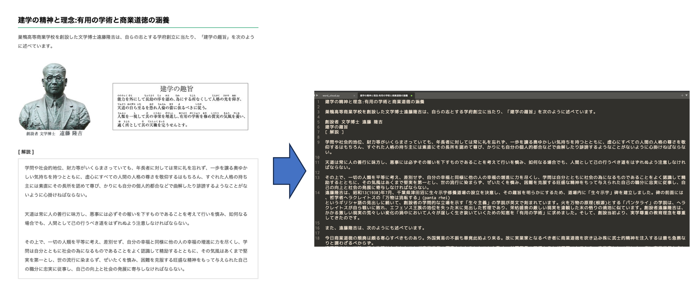
まずは, テキストデータを読み込んでみます. pandas などを利用して読み込むこともできますが, ここでは Python の組み込み関数 open() でファイルを開き, read() で読み込み, close() でファイルを閉じます.
# ファイルを開く
f = open('data/cuc.txt', encoding='utf-8')
# ファイルを読み込む
raw = f.read()
# ファイルを閉じる
f.close()
print(raw)
"""
建学の精神と理念:有用の学術と商業道徳の涵養
巣鴨高等商業学校を創設した文学博士遠藤隆吉は、自らの志とする学府創立に当たり、「建学の趣旨」を次のように述べています。
創設者 文学博士 遠藤 隆吉
...
"""pandas などではこれらの手順を一度にまとめて行ってくれていましたが, この手法で行う場合は close() を利用してファイルを閉じることを忘れないようにしましょう. 忘れた場合, システムのリソースが無駄に占有され, 他のプログラムやソフトがファイルにアクセスできなくなるなどの問題が生じる可能性があります. 今回はファイルを読み込むだけですが, 間に適用される処理が多くなるほど, open() と close() の間の対応関係が分かりづらくなります.
そこでこのように手動で close() を呼ぶ代わりに, Python では with 文を使うことで, インデントブロックを抜けたときに自動的にファイルを閉じられます. with 文を使うとコードが簡潔になり, 閉じ忘れも防げるので, 一般には with 文の使用が推奨されます.
with open('data/cuc.txt', encoding='utf-8') as f:
raw = f.read()
print(raw)続いて形態素解析の前の前処理を行います. (以下の形態素解析のコードなどは神戸学院大学 林坂ゼミの資料を参考にしました.)
前処理として, テキストファイルの改行やタブなどを削除する関数を用意します.
文字列を正規表現で操作するための標準ライブラリ re を import する必要があるので注意してください.
import re #正規表現操作のための標準ライブラリ
def strip_CRLF_from_Text(text):
"""テキストファイルの改行,タブを削除し,形態素解析を実行
改行前後が日本語文字の場合は改行を削除する．
それ以外はスペースに置換する．
"""
# 改行前後の文字が日本語文字の場合は改行を削除する
plaintext = re.sub('([ぁ-んー]+|[ァ-ンー]+|[\\u4e00-\\u9FFF]+|[ぁ-んァ-ンー\\u4e00-\\u9FFF]+)(\n)([ぁ-んー]+|[ァ-ンー]+|[\\u4e00-\\u9FFF]+|[ぁ-んァ-ンー\\u4e00-\\u9FFF]+)',
r'\1\3',
text)
# 残った改行とタブ記号はスペースに置換する
plaintext = plaintext.replace('\n', ' ').replace('\t', ' ')
return plaintext
text = strip_CRLF_from_Text(raw)
print(text)
"""
建学の精神と理念:有用の学術と商業道徳の涵養 巣鴨高等商業学校を創設した文学博士遠藤隆吉は...
"""改行やタブが消えて, 文毎にスペースで区切られた文章が作成されました. 日本語の文章の途中で改行がある場合には, 改行前後を結合して 1 文としてまとめられていることを確認しましょう.
続いて, 前処理を施した文章を, MeCab で形態素解析してみます.
抽出する品詞は word_types に [String] で指定します.
import MeCab as mc
def mecab_wakati(text,word_types = ["名詞","動詞","形容詞","副詞"]):
#分かち書き
t = mc.Tagger()
#word_types = [String]で指定 ("名詞","動詞","形容詞","副詞")
node = t.parseToNode(text)
sent = ""
noun = [x for x in word_types if x == "名詞"]
others = [x for x in word_types if x in [ "動詞", "形容詞","副詞"]]
while(node):
if node.surface != "": # ヘッダとフッタを除外
word_type = node.feature.split(",")[0]
if word_type in noun:
sent += node.surface + " " # node.surface は「表層形」
if word_type in others:
sent += node.feature.split(",")[10] + " " # node.feature.split(",")[10] は unidic の「書字形基本形」(活用する前の形, 例: 当たり → 当たる)
node = node.next
if node is None:
break
return sent
sent = mecab_wakati(text)
print(sent)
"""
建学 精神 理念 有用 学術 商業 道徳 涵養 巣鴨 商業 学校 創設 する 文学 博士 遠藤 隆吉 自ら 志 する 学府 創立 当たる...
"""
#動詞だけ抽出
sent = mecab_wakati(text,['動詞'])
print('-'*10 + '\n', sent)
"""
する する 当たる 述べる いる まさる いる 対する 忘れる 譲る 持つ...
"""以上で文章の形態素解析は完了です.
ワードクラウド
広く使われる文章の可視化手法として, 文章中に利用されている単語の頻度などを基準に文字の色や大きさを変えるワードクラウド (WordCloud) があります. 先ほど形態素解析した文章を利用して, ワードクラウドを作成してみましょう.
まず日本語を表示するためにフォントの設定を行います.
フォントの場所は Windows と Mac で異なるので, 自分の環境に合わせてコメントアウトを外してください.
# フォントの保存先を指定する（環境によって書き換えてください）
font_path = "C:\\WINDOWS\\FONTS\\MEIRYO.TTC" ## Windows 版はこちら
# font_path = "/System/Library/Fonts/ヒラギノ角ゴシック W3.ttc" ## Mac 版はこちらwordcloud をインストールしてから,
uv add wordcloudwordcloud を import して画像を生成します.
from wordcloud import WordCloud
# 直前で動詞だけに上書きした sent を, 既定の品詞で作り直します
sent = mecab_wakati(text)
wc = WordCloud(width=1000
,height=400
,background_color='white'
, regexp=r"[\w']+" #一文字を表示
,font_path=font_path).generate(sent)
wc.to_file("result/fig/cuc.png")指定した保存先 ("result/fig/cuc.png") に以下の画像が保存されているはずです.
ワードクラウドでは, 登場する用語の頻度に応じて大きさや色などが強調されています. 千葉商科大学の理念では, 「実業」「道徳」などが強調されていることが分かります.
ワードクラウドを作成するときは, 「こと」「もの」のようにどんな文章にも頻出する語を除いたほうが, 文章の特徴が見やすくなります. 除きたい語を stopwords に指定すると, その語はワードクラウドに表示されません.
stopwords = ['こと','もの','ため']
wc = WordCloud(width=1000
,height=400
,background_color='white'
, regexp=r"[\w']+" #一文字を表示
,font_path=font_path
,stopwords=stopwords).generate(sent)
wc.to_file("result/fig/cuc2.png")これまでのコードを整理すると以下のようになります.
from wordcloud import WordCloud
import re #正規表現操作のための標準ライブラリ
import MeCab as mc
def strip_CRLF_from_Text(text):
"""テキストファイルの改行,タブを削除し,形態素解析を実行
改行前後が日本語文字の場合は改行を削除する．
それ以外はスペースに置換する．
"""
# 改行前後の文字が日本語文字の場合は改行を削除する
plaintext = re.sub('([ぁ-んー]+|[ァ-ンー]+|[\\u4e00-\\u9FFF]+|[ぁ-んァ-ンー\\u4e00-\\u9FFF]+)(\n)([ぁ-んー]+|[ァ-ンー]+|[\\u4e00-\\u9FFF]+|[ぁ-んァ-ンー\\u4e00-\\u9FFF]+)',
r'\1\3',
text)
# 残った改行とタブ記号はスペースに置換する
plaintext = plaintext.replace('\n', ' ').replace('\t', ' ')
return plaintext
def mecab_wakati(text,word_types = ["名詞","動詞","形容詞","副詞"]):
#分かち書き
t = mc.Tagger()
#word_types = [String]で指定 ("名詞","動詞","形容詞","副詞")
node = t.parseToNode(text)
sent = ""
noun = [x for x in word_types if x == "名詞"]
others = [x for x in word_types if x in [ "動詞", "形容詞","副詞"]]
while(node):
if node.surface != "": # ヘッダとフッタを除外
word_type = node.feature.split(",")[0]
if word_type in noun:
sent += node.surface + " " # node.surface は「表層形」
if word_type in others:
sent += node.feature.split(",")[10] + " " # node.feature.split(",")[10] は unidic の「書字形基本形」(活用する前の形, 例: 当たり → 当たる)
node = node.next
if node is None:
break
return sent
with open('data/cuc.txt', encoding='utf-8') as f:
raw = f.read()
text = strip_CRLF_from_Text(raw)
#名詞だけ抽出
sent = mecab_wakati(text,['名詞'])
# WordCloud
# フォントの保存先を指定する（環境によって書き換えてください）
font_path = "C:\\WINDOWS\\FONTS\\MEIRYO.TTC" ## Windows 版はこちら
#font_path = "/System/Library/Fonts/ヒラギノ角ゴシック W3.ttc" ## Mac 版はこちら
stopwords = ['こと','もの','ため']
wc = WordCloud(width=1000
,height=400
,background_color='white'
, regexp=r"[\w']+" #一文字を表示
,font_path=font_path
,stopwords=stopwords).generate(sent)
wc.to_file("result/fig/cuc2.png")ユーザ定義辞書
MeCab のような形態素解析器は, 辞書に載っている単語を組み合わせて文を区切ります. 1 つの文にも区切り方の候補は何通りもあるので, 辞書の各単語には出やすさを表すコスト (小さいほど出やすい) が付いていて, 形態素解析器はコストの合計が最も小さくなる区切り方を選びます. そのため, 辞書に載っていない語は, 辞書に載っている短い単語の組み合わせに分けられます.
大学名と科目名を含む文を, トークン化と形態素解析と同じ MeCab (辞書は unidic-lite) で分かち書きしてみます.
import MeCab as mc
t = mc.Tagger('-Owakati')
print(t.parse('千葉商科大学でデータサイエンス実践を履修した。'))
"""
千葉 商科 大学 で データ サイエンス 実践 を 履修 し た 。
"""「千葉商科大学」は「千葉」「商科」「大学」に, 「データサイエンス実践」は「データ」「サイエンス」「実践」に分かれました. 学内アンケートの自由記述から, どの科目がよく話題になっているかを数える分析では, 科目名が 1 語として数えられないと集計できません. ワードクラウドでも, 「千葉」と「大学」が別々の語として表示されます.
形態素解析器の辞書に, 利用者が単語を追加したものをユーザ定義辞書 (ユーザ辞書) といいます. MeCab のユーザ辞書は, 次の手順で作ります.
- 登録する単語を, 1 行に 1 語ずつ CSV ファイルに書く.
- CSV ファイルを, MeCab が読み込める辞書ファイル (
.dic) にコンパイルする. - 形態素解析のときに,
-uオプションでユーザ辞書を指定する.
CSV の各行には, 表層形 (文中に現れる形), 左文脈 ID, 右文脈 ID, コスト, 品詞や読みなどの素性を, この順に並べます. 文脈 ID は前後の単語とのつながりやすさを決める番号で, 品詞ごとに辞書で決まっています. unidic-lite では, 固有名詞 (名詞-固有名詞-一般) の文脈 ID は 4786 です (辞書のフォルダにある left-id.def に書かれています). unidic-lite の素性は 26 項目あるので, 手で書く代わりに関数で作ります.
辞書のコンパイルには, MeCab の本体に付属するコマンド mecab-dict-index を使うのが一般的ですが, mecab-python3 にはこのコマンドが含まれていません. ここでは, 同じ機能を Python から呼び出せるライブラリ fugashi を使います. fugashi は MeCab を同梱しているので, Windows でも Mac でも, MeCab の本体を別にインストールせずに使えます.
この節では fugashi を使います. uv add しておいてください.
uv add fugashi作業フォルダに data フォルダがある状態で, 次のコードを実行します.
import csv
from pathlib import Path
import unidic_lite
from fugashi import build_dictionary
def user_entry(surface, reading, cost=3000):
"""ユーザ辞書の 1 行 (unidic-lite の 名詞-固有名詞-一般 と同じ形) を作る"""
feature = ['名詞', '固有名詞', '一般', '*', '*', '*',
reading, surface, surface, reading, surface, reading, '固',
'*', '*', '*', '*', reading, reading, reading, reading,
'*', '*', '*', '*', '*']
# 表層形, 左文脈ID, 右文脈ID, コスト, 素性 (品詞, 読みなど)
return [surface, 4786, 4786, cost] + feature
words = [('千葉商科大学', 'チバショウカダイガク'),
('データサイエンス実践', 'データサイエンスジッセン')]
# 1. 単語の一覧を CSV に書き出す
with open('data/user.csv', 'w', encoding='utf-8', newline='') as f:
csv.writer(f).writerows(user_entry(s, r) for s, r in words)
# 2. CSV をコンパイルして data/user.dic を作る
dicdir = Path(unidic_lite.DICDIR).as_posix() # unidic-lite の辞書の場所
build_dictionary(f'mecab-dict-index -d "{dicdir}" -u data/user.dic '
f'-f utf-8 -t utf-8 data/user.csv')
"""
.../unidic_lite/dicdir/pos-id.def is not found. minimum setting is used
reading data/user.csv ... 2
emitting double-array: 100% |###########################################|
done!
"""build_dictionary には, mecab-dict-index と同じオプションを 1 つの文字列で渡します. -d は品詞の情報を読み出すシステム辞書 (unidic-lite) の場所, -u は作るユーザ辞書のファイル名, -f と -t は CSV と辞書の文字コードです. 辞書の場所は Path(...).as_posix() で / 区切りに直しておくと, Windows でもそのまま渡せます. 出力の pos-id.def is not found は品詞の番号表が unidic-lite に含まれていないという表示で, ユーザ辞書の作成には影響しません. reading data/user.csv ... 2 は 2 語を読み込んだことを表します. CSV のファイル名を間違えるなどしてファイルが見つからないときは, エラーを表示してスクリプト全体が終了します.
作ったユーザ辞書を -u で指定して, 同じ文を解析し直します.
import MeCab as mc
text = '千葉商科大学でデータサイエンス実践を履修した。'
t = mc.Tagger('-Owakati -u data/user.dic')
print(t.parse(text))
t = mc.Tagger('-u data/user.dic')
print(t.parse(text))
"""
千葉商科大学 で データサイエンス実践 を 履修 し た 。
千葉商科大学 チバショウカダイガク チバショウカダイガク 千葉商科大学 名詞-固有名詞-一般
で デ デ で 助詞-格助詞
データサイエンス実践 データサイエンスジッセン データサイエンスジッセン データサイエンス実践 名詞-固有名詞-一般
を オ ヲ を 助詞-格助詞
履修 リシュー リシュウ 履修 名詞-普通名詞-サ変可能 0
し シ スル 為る 動詞-非自立可能 サ行変格 連用形-一般 0
た タ タ た 助動詞 助動詞-タ 終止形-一般
。 。 補助記号-句点
EOS
"""登録した 2 語が, それぞれ 1 語の固有名詞として解析されました. トークン化と形態素解析の mecab_wakati 関数は関数の中で mc.Tagger() を作っているので, ユーザ辞書を使うときはこの部分を mc.Tagger('-u data/user.dic') に書き換えます.
登録した語が選ばれるのは, その語のコストが, 分割したときの単語のコストの合計 (に単語同士のつながりのコストを加えたもの) より小さいときです. 同じ 2 語をコスト 15000 で登録すると「データサイエンス実践」は再び 3 語に分かれ, 20000 で登録すると「千葉商科大学」も 3 語に分かれます. 登録したのに分割される語があれば, コストを小さくします.
この節に対応する演習は, 章末のExercise DSP10-2です.
係り受け解析
形態素解析で文を単語に分けても, どの語がどの語を説明しているかは分かりません. 文の中で, ある語句が別の語句に意味の上でつながる関係を係り受けといい, 係る側を係り元, 係られる側を係り先といいます. 文の係り受けを求める処理を係り受け解析 (dependency parsing) といいます.
日本語の係り受けは, 伝統的に文節 (「田中さんが」「図書館で」のように, 自立語 1 つとそれに付く助詞などをまとめた単位) を単位として考えます. 「田中さんが図書館で統計の本を借りた。」の係り受けは, 次の図のようになります.
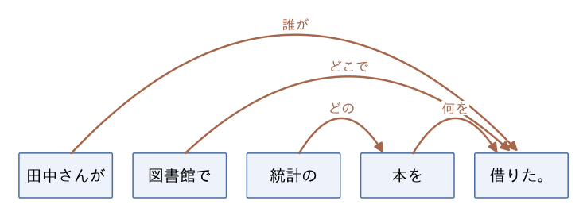
矢印は係り元の文節から係り先の文節へ向かいます. 「統計の」は「本を」に係り, 「田中さんが」「図書館で」「本を」はどれも文末の「借りた。」に係ります. 述語の「借りた」に係る文節を助詞で見分けると, 誰が (〜が), どこで (〜で), 何を (〜を) 借りたかが分かります. 語順を「図書館で田中さんが統計の本を借りた。」と入れ替えても係り受けの関係は変わらないので, 係り受けを使えば, 語順によらずに「誰が何をしたか」を取り出せます.
GiNZA による係り受け解析
係り受け解析には GiNZA を使います. GiNZA は, 自然言語処理のライブラリ spaCy の上で動く日本語の解析器で, 形態素解析, 係り受け解析, 固有表現抽出をまとめて行います. pip や uv だけでインストールでき, Windows でも Mac でも同じ手順で使えます.
この節では GiNZA を使います. uv add しておいてください. ja_ginza は GiNZA が解析に使う学習済みのモデルです.
uv add ginza ja_ginzaspacy.load('ja_ginza') でモデルを読み込み, 文を渡すと解析結果が返ります. 各単語 (spaCy ではトークンと呼びます) について, 番号, 表層形, 原形, 品詞, 係り受けのラベル, 係り先の番号, 係り先の語を表示します.
import spacy
nlp = spacy.load('ja_ginza')
doc = nlp('田中さんが図書館で統計の本を借りた。')
for t in doc:
print(t.i, t.text, t.lemma_, t.pos_, t.dep_, t.head.i, t.head.text, sep='\t')
"""
0 田中 田中 PROPN compound 1 さん
1 さん さん NOUN nsubj 9 借り
2 が が ADP case 1 さん
3 図書館 図書館 NOUN obl 9 借り
4 で で ADP case 3 図書館
5 統計 統計 NOUN nmod 7 本
6 の の ADP case 5 統計
7 本 本 NOUN obj 9 借り
8 を を ADP case 7 本
9 借り 借りる VERB ROOT 9 借り
10 た た AUX aux 9 借り
11 。 。 PUNCT punct 9 借り
"""GiNZA の係り受けは, 文節ではなく単語を単位とし, 多くの言語で共通に使われるラベルの体系 (Universal Dependencies) で関係の種類を表します. 助詞は前の名詞に case で係り, 名詞が述語に係ります. この文に現れたラベルの意味は次のとおりです.
| ラベル | 意味 | この文の例 (係り元 → 係り先) |
|---|---|---|
nsubj |
主語 | さん → 借り |
obj |
目的語 | 本 → 借り |
obl |
述語を補う語 (場所, 時, 相手など) | 図書館 → 借り |
nmod |
名詞を修飾する名詞 | 統計 → 本 |
compound |
複合語の一部 | 田中 → さん |
case |
格助詞 (が, で, の, を など) | が → さん |
aux |
助動詞 | た → 借り |
punct |
句読点 | 。 → 借り |
ROOT |
文の中心となる語 (係り先は自分自身) | 借り |
spaCy の displacy を使うと, 係り受けを図にできます. 次のコードは図を SVG ファイルに保存します. 保存した dep.svg をブラウザで開くと, 図が表示されます.
import spacy
from spacy import displacy
nlp = spacy.load('ja_ginza')
doc = nlp('田中さんが図書館で統計の本を借りた。')
svg = displacy.render(doc, style='dep', jupyter=False,
options={'compact': True, 'distance': 100})
with open('dep.svg', 'w', encoding='utf-8') as f:
f.write(svg)次の図は, 同じ文を compact を指定せずに描いたものです.
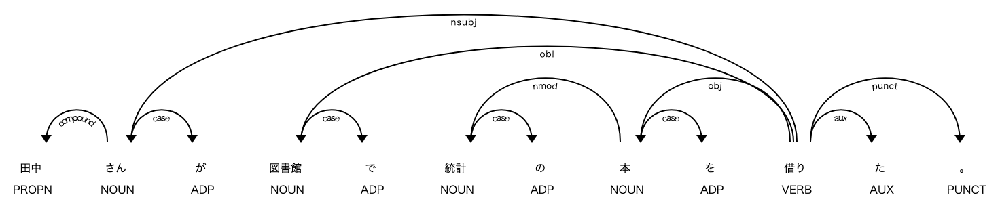
各単語の下に品詞, 弧の上にラベルが付いています. displacy の矢印は係り先から係り元へ向かうので, 文節の図とは矢印の向きが逆です. 「借り」から出る 3 本の長い弧 (nsubj, obl, obj) が「さん」「図書館」「本」に向かっていて, 文節の図の「田中さんが」「図書館で」「本を」から「借りた。」への矢印と同じ関係を表しています.
GiNZA は, 単語の係り受けを文節の係り受けにまとめる関数も持っています. ginza.bunsetu_spans は文を文節に区切り, ginza.bunsetu_span は単語を含む文節を返します.
import spacy
import ginza
nlp = spacy.load('ja_ginza')
doc = nlp('田中さんが図書館で統計の本を借りた。')
for b in ginza.bunsetu_spans(doc):
head = ginza.bunsetu_span(b.root.head) # 係り先の文節
print(b.text, '→', head.text if head != b else '(文末)')
"""
田中さんが → 借りた。
図書館で → 借りた。
統計の → 本を
本を → 借りた。
借りた。 → (文末)
"""b.root は文節の中心となる語 (「田中さんが」なら「さん」) です. その係り先の語を含む文節が, 文節の係り先になります. 結果は文節の図と一致します.
係り受けから「誰が何をしたか」を取り出す
係り受けを使って, 複数の文から「誰が」「何を」「どうした」を取り出してみます. 各文の中心 (ROOT) の語を述語とし, 述語に nsubj で係る語を「誰が」, obj で係る語を「何を」とします.
import spacy
import ginza
nlp = spacy.load('ja_ginza')
def phrase(token):
# token に係る語をまとめた句 (token 自身の格助詞は除く)
return ''.join(t.text for t in token.subtree
if not (t.dep_ == 'case' and t.head == token))
def predicate(token):
# 述語の文節から句読点を除いたもの
return ''.join(t.text for t in ginza.bunsetu_span(token) if t.pos_ != 'PUNCT')
text = ('田中さんが図書館で統計の本を借りた。'
'先生は学生にレポートの締め切りを伝えた。'
'売店では昼休みに弁当がよく売れる。'
'佐藤さんがデータサイエンス実践を履修した。')
for sent in nlp(text).sents:
root = sent.root # 文の中心 (ROOT) の語
who = [phrase(c) for c in root.children if c.dep_ == 'nsubj']
what = [phrase(c) for c in root.children if c.dep_ == 'obj']
print(f'誰が: {who}, 何を: {what}, どうした: {predicate(root)}')
"""
誰が: ['田中さん'], 何を: ['統計の本'], どうした: 借りた
誰が: ['先生'], 何を: ['レポートの締め切り'], どうした: 伝えた
誰が: ['弁当'], 何を: [], どうした: 売れる
誰が: ['佐藤さん'], 何を: ['データサイエンス実践'], どうした: 履修した
"""nlp(text).sents は解析結果を文ごとに区切ったもので, root.children は述語に直接係る語の一覧です. phrase は, 語に係る語 (token.subtree) をつないで「統計の本」「田中さん」のような句にする関数で, 句の末尾の格助詞 (「が」「を」) は除いています. 述語は, 助動詞も含めるために「借りた」のような文節の形で表示しています.
3 文目の「誰が」は「弁当」です. nsubj は文法上の主語 (述語「売れる」に対して「〜が」で示される語) を表し, 動作をした人とは限りません. 弁当を売ったのは売店, 買ったのは客です. 2 文目では「先生は」が nsubj になっています. 「は」は話題を示す助詞で, 格助詞の「が」とは働きが違いますが, GiNZA は述語との関係から「先生」を主語と判定しています.
4 文目の「データサイエンス実践」は 1 つの句として取り出せていますが, GiNZA は内部では「データ」「サイエンス」「実践」の 3 語に分け, compound でつないでいます. 一方で「千葉商科大学」は, MeCab (unidic-lite) と違って最初から 1 語になります.
import spacy
nlp = spacy.load('ja_ginza')
doc = nlp('千葉商科大学でデータサイエンス実践を履修した。')
print([t.text for t in doc])
"""
['千葉商科大学', 'で', 'データ', 'サイエンス', '実践', 'を', '履修', 'し', 'た', '。']
"""形態素解析器ごとに辞書の中身が違うので, 分析に使う固有名詞がどう区切られるかは, 実際に解析して確かめます. GiNZA (内部で使っている形態素解析器 Sudachi) にも, MeCab とは別の形式のユーザ辞書の仕組みがあります.
この節に対応する演習は, 章末のExercise DSP10-1です.
かな漢字変換
キーボードで「きしゃがきしゃする」と入力して変換すると, 「記者が帰社する」が候補の先頭に出ます. かな漢字変換は, 読み (ひらがなの並び) から漢字かな交じりの文を作る処理で, 次の 2 段階からなります.
- 候補の列挙: 読みを辞書に載っている単語の読みで区切り, 区切りごとに当てはまる単語の候補を並べる. 「きしゃ」には「記者」「汽車」「貴社」「帰社」などの候補がある.
- 候補の選択: 候補を組み合わせてできる文の中から, 日本語の文として最も出やすいものを選ぶ.
次の図は, 「きしゃがきしゃする」の候補を並べたものです (ラティスといいます). 文頭から文末まで矢印をたどる道の 1 本が, 変換結果の文 1 つにあたります. この図だけでも 4 × 4 = 16 通りの文があり, 読みが長くなると組み合わせの数は急速に増えます.
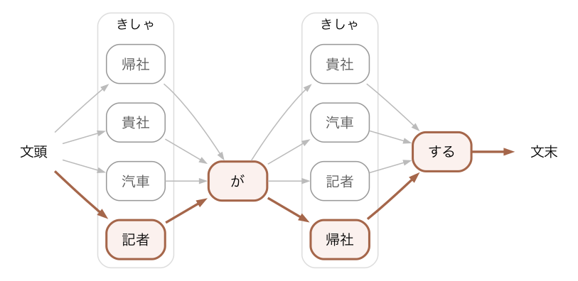
候補の選択には言語モデルを使います. 言語モデルは, 単語の並び w_1, w_2, \dots, w_n が文として現れる確率 P(w_1, w_2, \dots, w_n) を与えるモデルです. 最も単純な言語モデルの 1 つが, 直前の 1 単語だけから次の単語の確率を決める 2-gram (バイグラム) モデルです. 2-gram モデルでは, 「記者が帰社する」の確率を次の積で近似します.
P(\text{記者}, \text{が}, \text{帰社}, \text{する}) \approx P(\text{記者} \mid \text{文頭})\, P(\text{が} \mid \text{記者})\, P(\text{帰社} \mid \text{が})\, P(\text{する} \mid \text{帰社})\, P(\text{文末} \mid \text{する})
各確率は, 大量の文章 (コーパス) で隣り合う 2 単語の組を数えて求めます. 例えば P(\text{する} \mid \text{帰社}) は, コーパスで「帰社」の直後に「する」が来た回数を, 「帰社」が現れた回数で割った値です. 「帰社する」はコーパスによく現れ, 「記者する」はほとんど現れないので, 2 つ目の「きしゃ」は「帰社」になります. 図の太線が, 確率の積が最大になる道です. 左から順に, 各候補について「そこまでの道の確率の最大値」を記録していけば, すべての道を調べなくても最大の道が求まります (ビタビアルゴリズム).
2-gram モデルは隣り合う 2 単語しか見ません. 1 つ目の「きしゃ」を「記者」にするか「汽車」にするかは, P(\text{記者} \mid \text{文頭})\, P(\text{が} \mid \text{記者}) と P(\text{汽車} \mid \text{文頭})\, P(\text{が} \mid \text{汽車}) の比較だけで決まり, 離れた位置にある「帰社」との意味のつながりは使われません. そのため, 実際のかな漢字変換では, 直前の 2 単語を見る 3-gram モデルや, より長い文脈を扱えるニューラルネットワークの言語モデルも使われます. また, かな漢字変換のソフトにも単語登録の機能があり, 辞書にない固有名詞は, ユーザ定義辞書と同じく利用者が登録して候補に出します.
隣り合う単語の並び (n-gram) の数え方は, 文章同士の似ている度合いを測るのにも使えます. 後述のn-gram と文章間類似度 (発展)で扱います.
ニューラル言語モデル
ワードクラウドは単語の出現回数を数えるだけで, かな漢字変換の n-gram モデルも, 直前の数語との並びの出やすさを数えるだけです. どちらも単語の意味は扱っていません. 単語や文章の意味を数値のベクトルで表し, 分析に使うのがニューラル言語モデルです.
ここでは, 2018 年に Google が発表したニューラル言語モデルである BERT (Bidirectional Encoder Representations from Transformers) を利用します (BERT の後継には ELECTRA などのモデルもありますが, 本資料では BERT を使います).
BERT は, 第8章で扱った Transformer のエンコーダ部分を積み重ねたモデルです.
BERT などのニューラル言語モデルは事前学習とファインチューニングという二段階の学習を行うのが一般的です.
- 事前学習
(日本語などの) 言語全般について, 大規模なテキストコーパス (Wikipedia など) で学習します. 事前学習済みのモデルは Google などが公開していて, ライブラリとして利用できます.
- ファインチューニング
事前学習済みの BERT モデルを, 用途 (穴埋め, ラベリング, 校正など) に応じて追加学習させます. 用途に関連した新たなデータセットが必要で, ラベリングをするのであれば, ラベル付けされた教師データが必要です.
BERT はコーパスを用いてどのような学習を行っているのでしょうか. 基本的に BERT が行っているのは文章の穴埋め精度を高めるための学習です.
- 私はりんごを【MASK】
という一部が隠れた文章があったとき, 【MASK】の部分に入る文字列の確率計算をしています. 通常, 文章の【MASK】部分に入る文章は, それぞれ確率が異なります.
例えば, 上の文章では【MASK】部分に「行う」「走る」などの動詞が続く確率よりも「食べる」「買う」「調理する」などの動詞が続く確率が高いと考えられます.
- 私はりんごを行った ← 確率低い
- 私はりんごを食べた ← 確率高い
人間は過去の学習から, このような確率をなんとなく判断できますが, BERT はコーパスの一部を隠して当てさせるという方法で, あらゆる語彙の連なりやすさの確率を計算しています. 正解ラベルを人手で付けるのではなく, 元の文章そのものを正解として使うので, これは第8章で扱った自己教師あり学習にあたります.
ここで計算している確率は, 前の語句が与えられたときに次の語が来る条件付き確率です. コーパスの頻度で書くと次のようになります.
P(\text{食べた} \mid \text{私はりんごを}) = \frac{\text{コーパス中の「私はりんごを食べた」の頻度}}{\text{コーパス中の「私はりんごを」の頻度}}
P(\text{行った} \mid \text{私はりんごを}) = \frac{\text{コーパス中の「私はりんごを行った」の頻度}}{\text{コーパス中の「私はりんごを」の頻度}}
かな漢字変換の 2-gram モデルは, この頻度の比を, 直前の 1 単語に限って実際に数えるものでした. BERT は頻度を直接数えるのではなく, ニューラルネットワークでこの確率を推定します. 頻度を数える方法では, コーパスに一度も現れない語句の並びの確率は 0 になりますが, BERT は単語の意味を表すベクトルを通して, 現れたことのない並びにも確率を割り当てられます.
大抵はすでにこのような事前学習が行われたモデルを利用し, 必要があればファインチューニングをそれぞれの利用者が行います. 日本語で有名な学習済みモデルには, 東北大学が日本語版 Wikipedia の記事で学習したモデル (tohoku-nlp/bert-base-japanese-whole-word-masking) などがあります.
BERT のファインチューニングのためには, 目的に応じたデータセットが必要となります. このデータは, ワードクラウドで扱ったような分析の対象となるデータではなく, モデルに課題の解き方を学習させるための正解付きのデータです.
- データセット
日本語データセットとして良く利用されるものは以下のとおりです.
Twitter の商品に関するポジティブ, ネガティブ, ニュートラルのラベリングデータ
日本語を 48 の感情に分類
安らぎ、楽しさ親しみ、尊敬・尊さ、感謝、気持ちが良い、誇らしい、感動、喜び、悲しさ、寂しさ不満、切なさ、苦しさ、不安、憂鬱、辛さ、好き、嫌悪、恥ずかしい、焦り、驚き、怒り、幸福感、恨み、恐れ（恐縮等の意味で）、恐怖、悔しさ、祝う気持ち、困惑、きまずさ、興奮、悩み、願望、失望、あわれみ、見下し、謝罪、ためらい、不快、怠さ、あきれ、心配、緊張、妬み、憎い、残念、情けない、穏やか
ニュース記事をサイト別/ジャンル別に分類
トピックニュース - Sports Watch - IT ライフハック - 家電チャンネル - MOVIE ENTER - 独女通信 - エスマックス - livedoor HOMME - Peachy
有価証券報告書ネガポジデータセット
TIS 株式会社が公開している上場企業の有価証券報告書を用いて作成されたマルチラベルのネガポジデータセット
ネガティブ, ポジティブ, ニュートラルの 3 ラベル
BERT をどのように利用するかは, 様々な応用がありえますが, 良く利用される事例は以下のようなものです.
BERT の利用例
文章の穴埋め (Masked Language Model, MLM)
トークンを利用して文中の一部を隠し, その隠れた部分を予測します. たとえば「今日は【MASK】に行く」という文が与えられた場合, BERT は文脈に基づいて【MASK】部分が「学校」「会社」などになると予測します. この機能により, 文章の補完やオートコンプリート機能に利用できます.
文章分類
BERT は感情分析や話題の分類などの文章分類タスクで広く使われています. 例えば, 商品レビューや SNS の投稿をポジティブ・ネガティブといった感情ラベルに分類することで, マーケティング分析やレコメンドシステムの精度を向上させます. また, ニュース記事をカテゴリに分けるなど, 文書分類にも応用されています.
マルチラベル文章分類
一部の文章は, 複数の感情やカテゴリに属することがあり, BERT は「ポジティブかつネガティブ」のように複数のラベルを付与するマルチラベル分類も可能です. これにより, 特定のジャンルに限らない複数の特徴や感情を同時に判別し, より高度な文章分析を可能にします. たとえば, レビューが「高評価だが高価」といった異なる側面を含む場合も, それぞれの特徴を捉えることができます.
固有表現抽出 (Named Entity Recognition, NER)
BERT を用いて文章から特定の固有名詞を抽出できます. 例えば, 文中の「人名」「組織名」「地名」などの固有表現を検出し, ビジネスや医療, 自然言語処理の分野で多用されます. ニュース記事から企業名や国名を抽出して情報整理を行ったり, 顧客対応で企業名や製品名を抽出して対応を迅速化するなどの応用が可能です.
文章校正
BERT を使った校正機能は, 文法チェックやスペルチェックに利用され, Grammarly のようなサービスに応用できます. 文脈を考慮した校正が可能なため, 単なる誤字脱字の修正だけでなく, 不自然な表現を検知し, より適切な言い回しに修正することも可能です.
データの可視化と類似文章検索
BERT のエンコーディング機能を使うと, 文章をベクトル化し, 意味の似た文章を数値的に比較できるようになります. これにより, 多次元空間における文章の類似性が計算でき, 例えば PCA や t-SNE で次元を減らし, クラスタリングを行ってデータを可視化できます. 類似した内容の文書を自動でグループ分けしたり, ユーザーが検索したい文に近い内容の文書を瞬時に探すといった検索機能にも利用されます.
マルチラベル分類
マルチラベル分類とは, 選択肢の中から複数のカテゴリを選べる分類手法です.
今回は有価証券報告書データを利用して [ネガティブ,ニュートラル,ポジティブ] に分類します.
ネガティブと判定されると [1,0,0], ニュートラルと判定されると [0,1,0] のようなベクトルが返ってきます.
また, 一つの文章にネガティブな内容とポジティブな内容両方が含まれている場合には [1,0,1] のような結果となります.
GPU 計算と CPU 計算
PC における計算は通常 CPU によって行われます. これまでに実行してきた Python プログラムは, すべて CPU を用いて計算していました (第9章の画像認識のプログラムは GPU でも計算できるものでした). 一方で GPU (Graphics Processing Unit, 画像処理装置, いわゆるグラボ) を利用してプログラムを計算することも可能です. ニューラルネットワークモデルは, その特性から単純な計算を大量に行うため GPU を用いた並列計算が行われることが多いです.
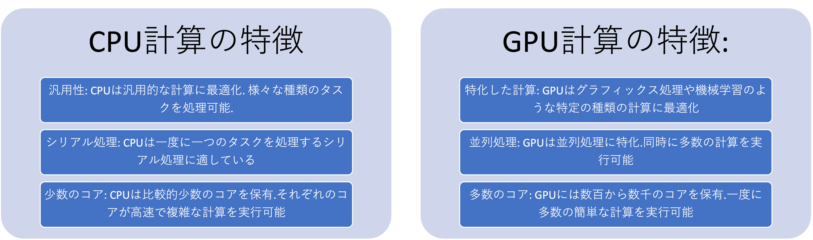
これから BERT を利用してマルチラベル分類を実施してみます. 大きなニューラルネットワークの学習は GPU を使うと速く終わるので, プログラムは第9章と同じく, CUDA か MPS が使えればそれを使い, 使えなければ CPU で計算します.
ただし, GPU のない PC でも数分で終わるように, 学習の規模を小さくしてあります. 規模は, プログラムの冒頭にある 3 つの値で決まります.
EPOCHS: 訓練データを繰り返して学習する回数MAX_LENGTH: 1 文から読み込む最大のトークン数 (これより長い文は切り捨てます)N_TRAIN: 学習に使う文の数
次の表は, Apple M5 Max の Mac で実行したときの学習の時間と, テストデータでの正解率です. 「元の設定」は, 学習用の文をすべて使い, 5 エポック, 最大長 128 で学習した場合です.
| 設定 | EPOCHS |
MAX_LENGTH |
N_TRAIN |
MPS | CPU のみ | 正解率 |
|---|---|---|---|---|---|---|
| 本文の設定 | 2 | 64 | 640 | 7 秒 | 68 秒 | 0.73 から 0.75 |
| 元の設定 | 5 | 128 | 1929 (全件) | 91 秒 | 約 30 分 | 0.87 |
元の設定で CPU のみの時間は, 実測した 1 ステップあたりの時間から換算した値です. Apple M5 Max はノート PC の中でも高性能なので, 一般的な PC の CPU ではこれより長くかかります. 元の設定で試したい場合や, GPU のない PC で時間を気にせず試したい場合は, 共通資料のGoogle Colaboratory による GPU 計算の手順で Colab の GPU を使い, 3 つの値を元の設定に変えて, 同じプログラムを実行してください.
次のライブラリを使います. uv add しておいてください. なお, 以下のマルチラベル文章分類に関するコードは, BERT による自然言語処理入門 オーム社を参考にしています.
uv add torch transformers fugashi unidic-lite pandasまずは, 学習の設定と, 学習済みのモデルを読み込みます. ニューラルモデルに関するこれらのコードをすべて理解するには, 膨大な時間が必要になります. ここでは, それぞれの部分で何をしているのかを大まかに把握しましょう.
import random
import time
import numpy as np
import pandas as pd
import torch
from transformers import AutoTokenizer, BertModel
# 日本語の学習済みモデル
MODEL_NAME = 'tohoku-nlp/bert-base-japanese-whole-word-masking'
# 学習の設定. GPU がない PC でも数分で終わる大きさにしている
EPOCHS = 2 # 訓練データを繰り返して学習する回数
MAX_LENGTH = 64 # 1 文から読み込む最大のトークン数
N_TRAIN = 640 # 学習に使う文の数
LEARNING_RATE = 3e-5
BATCH_SIZE = 32
# 使うデバイスの選択 (第 9 章と同じ)
if torch.backends.mps.is_available():
device = torch.device('mps') # Mac GPU
elif torch.cuda.is_available():
device = torch.device('cuda:0') # Win GPU
else:
device = torch.device('cpu') # CPU
print(f'Using device: {device}')
# マルチラベル文章分類用のモデル
class BertForMultiLabel(torch.nn.Module):
def __init__(self, model_name, num_labels):
super().__init__()
# 学習済みの BERT を読み込む
self.bert = BertModel.from_pretrained(model_name)
# BERT の出力を各ラベルのスコアに変える線形変換
self.linear = torch.nn.Linear(self.bert.config.hidden_size, num_labels)
def forward(self, input_ids, attention_mask, token_type_ids=None):
output = self.bert(
input_ids=input_ids,
attention_mask=attention_mask,
token_type_ids=token_type_ids,
)
# [PAD] 以外のトークンの出力を平均して, 文のベクトルにする
mask = attention_mask.unsqueeze(-1)
sentence_vector = (output.last_hidden_state * mask).sum(1) / mask.sum(1)
return self.linear(sentence_vector)
torch.manual_seed(0) # 線形変換の初期値を固定する
tokenizer = AutoTokenizer.from_pretrained(MODEL_NAME)
model = BertForMultiLabel(MODEL_NAME, num_labels=3).to(device)続いて, ファインチューニングを実施します. 今回は, TIS 株式会社が上場企業の有価証券報告書から作成したマルチラベルのネガポジデータセット chABSA-datasetを利用します. 文ごとに, ネガティブ, ニュートラル, ポジティブの評価が付いています. 文の数は 3215 で, 1 つの文にポジティブとネガティブの両方が付く場合を含め, 複数の評価が付く文が 916 あります.
このデータは CC BY 4.0 で公開されています. 元の配布先は現在閉鎖されているため, Hugging Face で公開されている同じデータ (zenless-lab/chABSA) から, 文と 3 つのラベルを列にした CSV を作りました. chABSA.csvをダウンロードして, プログラムを置くディレクトリの data ディレクトリに保存してください.
データを学習用 (60%), 検証用 (20%), テスト用 (20%) に分けます. 学習に使うのは, 学習用のうち N_TRAIN 文です. 検証用は, エポックごとの損失を見て, 第9章と同じく過学習を確認するために使います. 文のトークン化には, BERT のトークナイザを使います.
# データの読み込み. ラベルは (ネガティブ, ニュートラル, ポジティブ)
df = pd.read_csv('data/chABSA.csv')
texts = df['text'].tolist()
labels = df[['negative', 'neutral', 'positive']].values.astype(np.float32)
# 学習用 (60%), 検証用 (20%), テスト用 (20%) に分ける
random.seed(0)
index = list(range(len(df)))
random.shuffle(index)
n_train_all = int(0.6 * len(index))
n_val = int(0.2 * len(index))
train_index = index[:n_train_all][:N_TRAIN]
val_index = index[n_train_all : n_train_all + n_val]
test_index = index[n_train_all + n_val :]
print(f'学習: {len(train_index)} 文, 検証: {len(val_index)} 文, テスト: {len(test_index)} 文')
def make_batch(batch_index):
"""文を BERT への入力に変え, device へ送る."""
encoding = tokenizer(
[texts[i] for i in batch_index],
max_length=MAX_LENGTH,
padding='longest',
truncation=True,
return_tensors='pt',
)
encoding = {key: value.to(device) for key, value in encoding.items()}
y = torch.tensor(labels[batch_index]).to(device)
return encoding, y
def evaluate(data_index):
"""損失と, 3 つのラベルがすべて一致した割合を返す."""
model.eval()
total_loss, n_correct = 0.0, 0
with torch.no_grad():
for i in range(0, len(data_index), 128):
encoding, y = make_batch(data_index[i : i + 128])
scores = model(**encoding)
total_loss += torch.nn.BCEWithLogitsLoss()(scores, y).item() * len(y)
n_correct += ((scores > 0).float() == y).all(dim=1).sum().item()
return total_loss / len(data_index), n_correct / len(data_index)データの準備が整ったので, ファインチューニングを行います. 今回はエポック数を 2 として, 決め打ちで行っています. 実際に研究等で使用する場合には, 検証用データの損失を見て, エポック数や学習率 (LEARNING_RATE) を調整しましょう. 学習の時間は, 本文の設定で数秒から数分です.
optimizer = torch.optim.Adam(model.parameters(), lr=LEARNING_RATE)
loss_function = torch.nn.BCEWithLogitsLoss()
start = time.time()
for epoch in range(EPOCHS):
model.train()
random.shuffle(train_index)
for i in range(0, len(train_index), BATCH_SIZE):
encoding, y = make_batch(train_index[i : i + BATCH_SIZE])
loss = loss_function(model(**encoding), y)
loss.backward()
optimizer.step()
optimizer.zero_grad()
val_loss, val_accuracy = evaluate(val_index)
print(f'Epoch {epoch + 1}/{EPOCHS}', end=' ')
print(f'val_loss: {val_loss:.3f} val_accuracy: {val_accuracy:.3f}')
print(f'学習時間: {time.time() - start:.0f} 秒')
test_loss, test_accuracy = evaluate(test_index)
print(f'Accuracy: {test_accuracy:.2f}')
"""
Using device: mps
学習: 640 文, 検証: 643 文, テスト: 643 文
Epoch 1/2 val_loss: 0.309 val_accuracy: 0.706
Epoch 2/2 val_loss: 0.253 val_accuracy: 0.756
学習時間: 8 秒
Accuracy: 0.73
"""テストデータに対する正解率は 7 割ほどでした. この正解率は, 3 つのラベルがすべて一致した割合です. 値は PC や環境によって少し変わります. 元の設定で学習すると, 5 エポックのうち検証用データの損失は 2 エポック目で最小になり (0.180), 5 エポック目には 0.227 まで大きくなりました. 訓練データへの当てはまりだけが進む過学習です. 正解率は 0.87 になりました.
それではファインチューニングしたモデルを利用して, マルチラベル分類を行ってみます.
最初の text_list 部分に適当に作成した文章をリスト形式で与えます. 研究などではここに CSV などで取得した外部のデータを指定します. それぞれのネガティブ, ニュートラル, ポジティブの判定結果を見てみましょう.
# 入力する文章. 結果はネガティブ, ニュートラル, ポジティブの順
text_list = [
'当連結会計年度の売上高は前期比5.8%増加し、業績は堅調に推移しました。',
'海外市場での需要拡大が寄与し、売上および営業利益が過去最高を記録しました。',
'一部事業における原材料価格の高騰の影響を受け、収益性が低下しました。',
'国内景気は緩やかな回復基調を維持したものの、インフレ率の上昇が購買力に影響を及ぼしました。',
'新興市場における競争激化により、当社製品のシェアは微減しましたが、全体的な市場拡大により売上は増加しました。',
'為替変動が利益にプラスの影響を与えた一方で、サプライチェーンの遅延が一部事業の成長を抑制しました。',
'2025年度に向けて、成長市場への積極的な投資と新規事業の開発に注力する予定です。',
'業界全体の需要鈍化が予想される中で、コスト構造の見直しにより安定的な収益を確保していきます。',
'カーボンニュートラル達成を目指し、再生可能エネルギーへのシフトを加速させます。',
'当社は、デジタル化の遅れが競争力に与える影響を認識しており、ITシステムへの投資を増強する方針です。',
'地政学的リスクの高まりにより、一部の輸出取引に不確実性が生じています。',
'半導体不足の影響を受け、特定製品の納期が遅延する可能性があります。',
]
encoding = tokenizer(
text_list,
max_length=MAX_LENGTH,
padding='longest',
truncation=True,
return_tensors='pt',
)
encoding = {key: value.to(device) for key, value in encoding.items()}
model.eval()
with torch.no_grad():
scores = model(**encoding)
labels_predicted = (scores > 0).int().cpu().numpy().tolist()
for text, label in zip(text_list, labels_predicted):
print('--')
print(f'入力: {text}')
print(f'出力: {label}')
"""
--
入力: 当連結会計年度の売上高は前期比5.8%増加し、業績は堅調に推移しました。
出力: [0, 0, 1]
--
入力: 海外市場での需要拡大が寄与し、売上および営業利益が過去最高を記録しました。
出力: [0, 0, 1]
--
入力: 一部事業における原材料価格の高騰の影響を受け、収益性が低下しました。
出力: [1, 0, 0]
--
入力: 国内景気は緩やかな回復基調を維持したものの、インフレ率の上昇が購買力に影響を及ぼしました。
出力: [0, 0, 1]
--
入力: 新興市場における競争激化により、当社製品のシェアは微減しましたが、全体的な市場拡大により売上は増加しました。
出力: [1, 0, 1]
--
入力: 為替変動が利益にプラスの影響を与えた一方で、サプライチェーンの遅延が一部事業の成長を抑制しました。
出力: [1, 0, 0]
--
入力: 2025年度に向けて、成長市場への積極的な投資と新規事業の開発に注力する予定です。
出力: [0, 0, 1]
--
入力: 業界全体の需要鈍化が予想される中で、コスト構造の見直しにより安定的な収益を確保していきます。
出力: [0, 0, 1]
--
入力: カーボンニュートラル達成を目指し、再生可能エネルギーへのシフトを加速させます。
出力: [0, 0, 1]
--
入力: 当社は、デジタル化の遅れが競争力に与える影響を認識しており、ITシステムへの投資を増強する方針です。
出力: [0, 0, 1]
--
入力: 地政学的リスクの高まりにより、一部の輸出取引に不確実性が生じています。
出力: [1, 0, 0]
--
入力: 半導体不足の影響を受け、特定製品の納期が遅延する可能性があります。
出力: [1, 0, 0]
"""結果を見てみると, 業績が良いことだけを述べた 1 文目と 2 文目はポジティブ, 悪化したことを述べた 3 文目と 12 文目はネガティブと判定されています. 好材料と悪材料が混じる 4 文目から 6 文目は, 5 文目では両方が判定された一方, 4 文目はポジティブだけ, 6 文目はネガティブだけが判定されています. 学習の規模を小さくしたことが影響している可能性があります. 3 つの設定の値を変えて, 判定がどう変わるかを比べてみましょう. 文章を変える, 外部からデータを取り込むなどして, これ以外の事例でも試してみましょう.
機械翻訳と文章生成 (発展)
機械翻訳は, ある言語の文を, 別の言語の同じ意味の文に変換する処理です. かつては, 単語や句の対訳の表と n-gram の言語モデルを組み合わせた統計的機械翻訳が主流でしたが, 2016 年ごろからニューラルネットワークによる翻訳 (ニューラル機械翻訳) に置き換わりました.
第8章の Transformer は, もともと機械翻訳のために作られたモデルで, 翻訳前の文を読み取るエンコーダと, 翻訳後の文を作るデコーダからなります. 次の図は, 「猫が鳴く」を英語に翻訳する流れです.
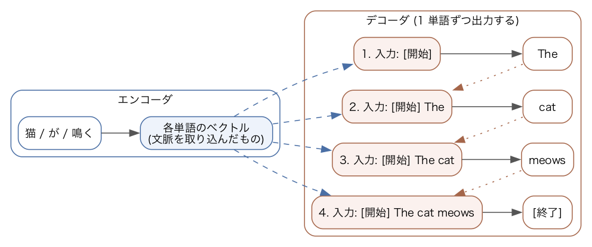
- エンコーダは「猫」「が」「鳴く」を読み取り, 各単語を, 文全体の文脈を取り込んだベクトルに変換します.
- デコーダは, 文の始まりを表す特別なトークン
[開始]を入力として, 翻訳後の最初の単語の確率を出力します. 確率が最も大きい単語「The」を選びます. - 選んだ単語を入力の末尾に加え (点線の矢印),
[開始] Theから次の単語「cat」を予測します. デコーダは各段階で, エンコーダが作ったベクトルにも注意を向け (破線の矢印), 翻訳前の文のどの単語に対応するかを参照します. - 文の終わりを表す
[終了]が選ばれたら, 翻訳を終えます.
このように, それまでに作った単語を入力に加えながら, 次の単語を 1 つずつ予測して文を作る方法を自己回帰生成といいます. [終了] を出す時点もモデルが予測するので, 翻訳前と翻訳後で単語の数が違う文も作れます.
文章生成も, 同じ自己回帰生成で行います. 翻訳では翻訳前の文を手がかりに次の単語を予測しましたが, エンコーダを使わずに, それまでの文章だけから次の単語を予測すれば, 文章の続きを作れます. 対話型の生成 AI で使われる大規模言語モデル (GPT など) は, このようにデコーダだけを積み重ねたモデルです (第8章). 「今日の天気は」に続けて「晴れ」「です」「。」のように, 1 トークンずつ予測して文章を作ります.
生成 AI の仕組み: 事前学習と生成 (発展)
対話型の生成 AI の中で動いている大規模言語モデルは, 次の 3 段階を経て使われます.
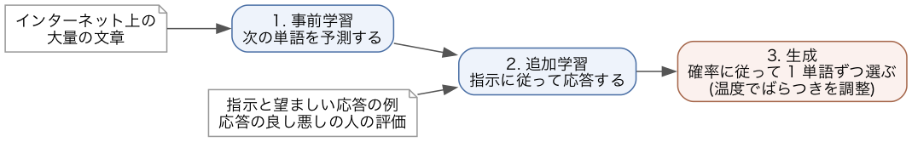
- 事前学習: インターネット上の文章や書籍など, 大量の文章で, 次のトークンを予測する問題 (第8章の次トークン予測) を解かせます. 正解は文章そのものなので, 人が正解を付ける必要はありません. 現在の大規模なモデルは, 数兆トークン規模の文章で学習しています. 事前学習を終えたモデルは, 文章の自然な続きを作れますが, 質問に答えるとは限りません. 「日本の首都はどこですか」の続きとして, 答えではなく, よく似た質問を並べ続けることもあります.
- 指示に従うための追加学習: 指示と, それに対する望ましい応答の組を人が作り, その組で追加の学習 (ファインチューニング) をします. さらに, 同じ指示に対する複数の応答を人が比べて評価し, 評価の高い応答を出しやすくなるように学習します (人のフィードバックによる強化学習, RLHF). この段階で, 質問に答える, 指示に従う, 有害な依頼を断る, といったふるまいを身に付けます.
- 生成: 利用者の入力 (プロンプト) の続きとして, 次のトークンを 1 つずつ選んで回答を作ります. 機械翻訳と文章生成の自己回帰生成です.
生成の各段階で, モデルは語彙のそれぞれについて, 次のトークンになる確率を出力します. 確率が最大のトークンを毎回選ぶと, 同じ入力には常に同じ回答になり, 決まった言い回しを繰り返しやすくなります. そこで実際には, 出力された確率に従ってトークンを無作為に選びます (サンプリング). 確率 0.6 のトークンは, 10 回のうち 6 回ほど選ばれます. 同じ質問をしても毎回違う回答が返ってくるのは, このためです.
選ばれ方のばらつきを調整するのが温度 (temperature) です. softmax 関数に入れる前の各トークンのスコアを z_i とすると, 温度 T での確率は次の式で求めます.
p_i = \frac{\exp(z_i / T)}{\sum_j \exp(z_j / T)}
T = 1 のときは, 第8章の softmax 関数そのものです. 「今日の天気は」の次のトークンの候補が 4 つで, スコアが「晴れ」2.0, 「雨」1.0, 「くもり」0.5, 「雪」-1.0 だったとします. 温度を変えて確率を計算すると, 次の図のようになります.
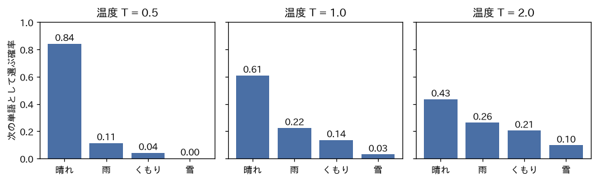
- T = 0.5 では, 「晴れ」の確率が 0.84 まで上がり, 「雪」は 0.002 になります. 温度を下げるとスコアの差が拡大され, 確率の大きいトークンがさらに選ばれやすくなります.
- T = 2 では, 「晴れ」が 0.43, 「雪」が 0.10 になり, 確率の差が縮まります. 温度を上げると, ふだんは選ばれにくいトークンも選ばれるようになり, 回答が多様になる代わりに, 不自然な文も出やすくなります.
事実を正確に答えてほしい用途では温度を低く, アイデアを多く出してほしい用途では温度を高く設定します. ただし, 温度を下げても回答が正しいとは限りません. 大規模言語モデルは, 学習した文章での単語の並びの出やすさに基づいて回答を作るので, もっともらしいが事実と異なる文 (ハルシネーション) を含むことがあります. 生成 AI の回答は, 出典や別の資料で確かめてから使います.
自然言語ベクトル抽出によるデータ可視化と類似度評価
続いて, BERT を利用して文章をベクトルに変換しクラスタリングや類似度の評価を行ってみます. 事例として, 異なる言語 (アラビア語, 中国語, 英語, フランス語, ドイツ語, ヒンディー語, インドネシア語, イタリア語, 日本語, 韓国語, ポルトガル語, ロシア語, スペイン語, トルコ語) での Wikipedia における LGBTQ に関する記事の類似度を評価してみます.
各言語の記事を日本語に翻訳したデータをダウンロードして, プログラムを置くディレクトリの data ディレクトリに保存しましょう. 本来は, 英語に翻訳したほうが翻訳精度の関係から望ましいですが, ここでは分かりやすいように日本語に翻訳してあります.
また, 日本語のワードクラウドを作成するために, 日本語のフォントも data ディレクトリに保存しておきます. 日本語フォントをダウンロードして, data ディレクトリに保存しておきましょう.
この節の BERT は, 学習をせずに文章をベクトルに変えるだけなので, GPU がなくても短い時間で終わります (14 記事で, Apple M5 Max の CPU のみで約 2 秒です). 次のライブラリを使います. uv add しておいてください.
uv add torch transformers fugashi unidic-lite pandas scikit-learn scipy matplotlib matplotlib-fontja seaborn adjustText tqdm続いて各種インポートと, 設定を行います.
from tqdm import tqdm
import numpy as np
from sklearn.manifold import TSNE
from sklearn.decomposition import PCA
import matplotlib.pyplot as plt
import matplotlib_fontja
import pandas as pd
import torch
from transformers import BertJapaneseTokenizer, BertModel
import seaborn as sns
from adjustText import adjust_text
#グラフの設定
plt.style.use('ggplot') #グラフスタイル
plt.rcParams['figure.figsize'] = [20, 15] #グラフサイズ
plt.rcParams['font.size'] = 14 #フォントサイズ
# 使うデバイスの選択 (第9章と同じ)
if torch.backends.mps.is_available():
device = torch.device('mps') #Mac GPU
elif torch.cuda.is_available():
device = torch.device('cuda:0') #Win GPU
else:
device = torch.device('cpu') #CPU
# BERTの日本語モデル
MODEL_NAME = 'tohoku-nlp/bert-base-japanese-whole-word-masking'データを読み込み, ベクトル化します. 今回はファインチューニングは行わず日本語 Wikipedia で学習した BERT のモデルをそのまま利用します.
# ベクトルを作成するデータの読み込み
df_wiki = pd.read_csv('./data/LGBTWiki.csv')
category_list = ['Arabic'
,'Chinese'
,'English'
,'France'
,'German'
,'Hindi'
,'Indonesian'
,'Italian'
,'Japanese'
,'Korean'
,'Portuguese'
,'Russian'
,'Spanish'
,'Turkish']
print(df_wiki)
print(df_wiki['Text'][0])
df_wiki['Text'] = df_wiki['Text'].astype(str)
# トークナイザとモデルのロード
tokenizer = BertJapaneseTokenizer.from_pretrained(MODEL_NAME)
model = BertModel.from_pretrained(MODEL_NAME)
model = model.to(device)
# 各データの形式を整える
max_length = 256
sentence_vectors = [] # 文章ベクトルを追加していく。
labels = [] # ラベルを追加していく。
for i in tqdm(df_wiki.index):
encoding = tokenizer(
df_wiki.at[i,'Text'],
max_length=max_length,
padding='max_length',
truncation=True,
return_tensors='pt'
)
encoding = { k: v.to(device) for k, v in encoding.items() }
attention_mask = encoding['attention_mask']
# 文章ベクトルを計算
# BERTの最終層の出力を平均を計算する。（ただし、[PAD]は除く。）
with torch.no_grad():
output = model(**encoding)
last_hidden_state = output.last_hidden_state
averaged_hidden_state = \
(last_hidden_state*attention_mask.unsqueeze(-1)).sum(1) \
/ attention_mask.sum(1, keepdim=True)
# 文章ベクトルとラベルを追加
sentence_vectors.append(averaged_hidden_state[0].cpu().numpy())
labels.append(df_wiki.at[i,'Country'])
# それぞれをnumpy.ndarrayにする。
sentence_vectors = np.vstack(sentence_vectors)
print(sentence_vectors)
labels = np.array(labels)
print(labels)各 Wikipedia の記事がベクトル化されたので, それぞれの組のコサイン類似度を計算します (コード中の「コサイン距離」という表示も, 計算しているのはコサイン類似度です).
df_vector = pd.DataFrame(data=sentence_vectors.T,columns=labels)
print(df_vector)
df_vector.to_csv('data/vector.csv',encoding='utf-8-sig')
#コサイン類似度の計算
def cos(x,y):
return np.dot(x,y) / (np.linalg.norm(x)*np.linalg.norm(y))
#全組み合わせのコサイン距離
df_cos = pd.DataFrame(columns=[str(x) for x in labels]
,index=[str(x) for x in labels])
for i in df_cos.index:
for c in df_cos.columns:
df_cos.at[i,c] = cos(df_vector[i],df_vector[c])
df_cos = df_cos[labels].astype(float)
print(df_cos.dtypes)
df_cos.sort_values(inplace=True, by=['German'],ascending=False)
df_cos = df_cos.reindex(columns=df_cos.index)
print('コサイン距離------')
print(df_cos)
sns.heatmap(df_cos)
df_cos.to_csv('data/cos.csv',encoding='utf-8-sig')
#ドイツとの距離を測る
"""
コサイン距離------
German Spanish Portuguese Arabic Hindi Italian \
German 1.000000 0.976203 0.975127 0.971573 0.970698 0.969747
Spanish 0.976203 1.000000 0.981414 0.972422 0.969167 0.979055
Portuguese 0.975127 0.981414 1.000000 0.984561 0.978703 0.981902
Arabic 0.971573 0.972422 0.984561 1.000000 0.979478 0.974308
Hindi 0.970698 0.969167 0.978703 0.979478 1.000000 0.976511
Italian 0.969747 0.979055 0.981902 0.974308 0.976511 1.000000
France 0.967945 0.979471 0.977836 0.963222 0.961492 0.975864
Russian 0.966447 0.974909 0.982041 0.977697 0.975407 0.976528
Japanese 0.954630 0.954573 0.952049 0.947444 0.963872 0.967003
Turkish 0.939331 0.937166 0.937905 0.937141 0.943376 0.953529
Chinise 0.933493 0.951283 0.943161 0.935953 0.944198 0.952429
Korean 0.927303 0.938399 0.917036 0.899642 0.900244 0.932856
English 0.918245 0.925514 0.907207 0.887589 0.890674 0.922525
Indonesian 0.876889 0.887521 0.866018 0.841958 0.843015 0.880764
France Russian Japanese Turkish Chinise Korean \
German 0.967945 0.966447 0.954630 0.939331 0.933493 0.927303
Spanish 0.979471 0.974909 0.954573 0.937166 0.951283 0.938399
Portuguese 0.977836 0.982041 0.952049 0.937905 0.943161 0.917036
Arabic 0.963222 0.977697 0.947444 0.937141 0.935953 0.899642
Hindi 0.961492 0.975407 0.963872 0.943376 0.944198 0.900244
Italian 0.975864 0.976528 0.967003 0.953529 0.952429 0.932856
France 1.000000 0.971557 0.956259 0.949862 0.934714 0.931158
Russian 0.971557 1.000000 0.951799 0.944928 0.940381 0.905520
Japanese 0.956259 0.951799 1.000000 0.949200 0.919489 0.911559
Turkish 0.949862 0.944928 0.949200 1.000000 0.903424 0.903760
Chinise 0.934714 0.940381 0.919489 0.903424 1.000000 0.924830
Korean 0.931158 0.905520 0.911559 0.903760 0.924830 1.000000
English 0.923854 0.898786 0.900241 0.898590 0.903045 0.981151
Indonesian 0.887053 0.857061 0.853968 0.860300 0.858218 0.964330
English Indonesian
German 0.918245 0.876889
Spanish 0.925514 0.887521
Portuguese 0.907207 0.866018
Arabic 0.887589 0.841958
Hindi 0.890674 0.843015
Italian 0.922525 0.880764
France 0.923854 0.887053
Russian 0.898786 0.857061
Japanese 0.900241 0.853968
Turkish 0.898590 0.860300
Chinise 0.903045 0.858218
Korean 0.981151 0.964330
English 1.000000 0.974397
Indonesian 0.974397 1.000000
"""各言語間の記事の内容のコサイン類似度をヒートマップで表現すると以下のようになりました. 数値は, 使っているライブラリのバージョンによって少し変わります. 以降の図も細部は変わりますが, 階層クラスタリングで分かれるクラスタの組み合わせは同じになることを確かめてあります.
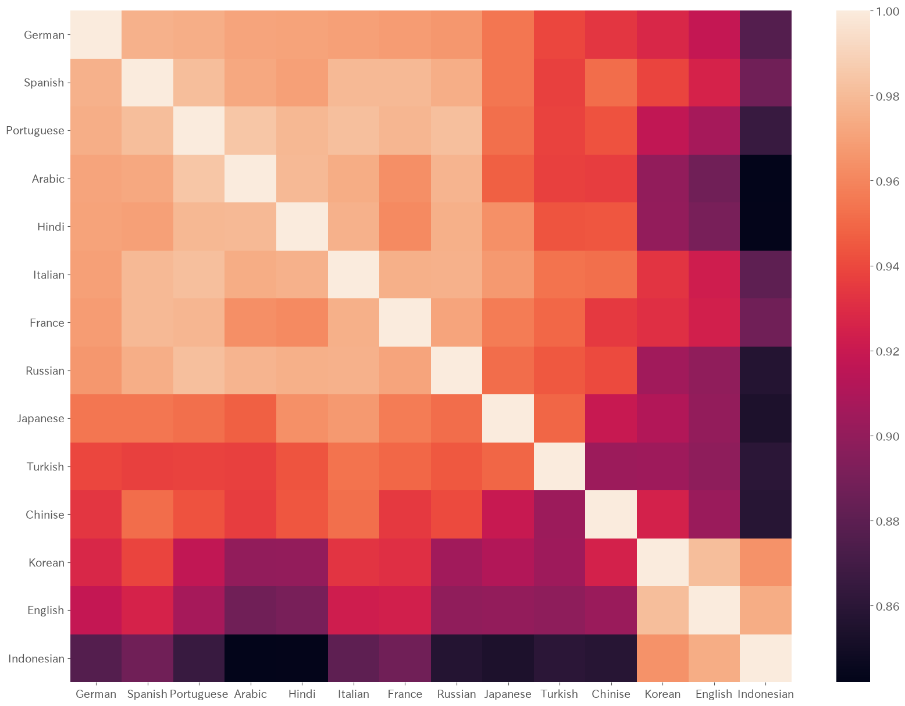
今回はドイツ語からの距離を基準にソートされていますが, ドイツ語と類似度が高いヨーロッパ言語圏のクラスタ, 韓国語, インドネシア語, 英語のクラスタがあることが見受けられます.
続いて, 各言語のベクトルを PCA と t-SNE によって次元削減して, 2 次元上に配置してみます.
#PCAとtsneの比較
#PCAによる次元削減
pca = sentence_vectors_pca = PCA(n_components=2).fit_transform(sentence_vectors)
plt.scatter(pca[:,0],pca[:,1])
text = [plt.text(pca[i,0],pca[i,1],l) for i,l in enumerate(labels)]
plt.title('PCA')
adjust_text(text, arrowprops=dict(arrowstyle='-', color='gray', lw=0.5))
plt.show()
# t-sneによる次元削減 pの適正値を探す
"""
for p in range(5,14):
tsne = sentence_vectors_tsne = TSNE(n_components=2,perplexity=p).fit_transform(sentence_vectors)
plt.scatter(tsne[:,0],tsne[:,1])
for i,l in enumerate(labels):
plt.text(tsne[i,0],tsne[i,1],l)
plt.title('TSNE p = '+ str(p))
plt.show()
"""
#距離と整合的なのでp=5で決め打ち
tsne = sentence_vectors_tsne = TSNE(n_components=2,perplexity=5).fit_transform(sentence_vectors)
plt.scatter(tsne[:,0],tsne[:,1])
text = [plt.text(tsne[i,0],tsne[i,1],l) for i,l in enumerate(labels)]
plt.title('TSNE')
adjust_text(text, arrowprops=dict(arrowstyle='-', color='gray', lw=0.5))
plt.show()結果は以下のようになりました. いずれの次元削減手法でも, 韓国語, インドネシア語, 英語のクラスタが見て取れますが, PCA ではトルコ語, 日本語, 中国語などが離れた位置に配置され, それ以外の言語が固まっています.
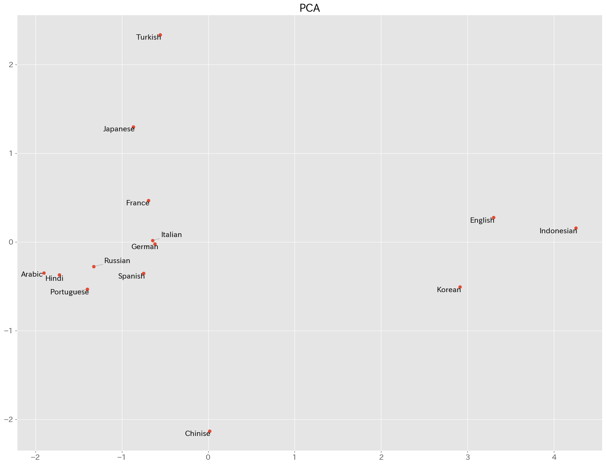
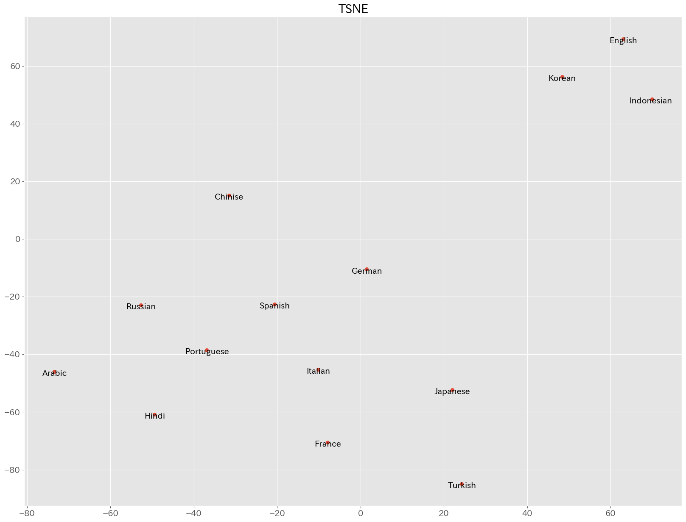
ここではよりクラスタに特徴が見られる, PCA を利用してクラスタリングを行ってみましょう. 教師なし学習なので, 階層クラスタリングを行ってみます. 研究では, 中心や距離を適切に設定する必要がありますが, ここでは Ward 法を用いてみます.
# 階層クラスタリングで決め打ちする.
from scipy.cluster.hierarchy import dendrogram, linkage, fcluster
#ward法で分類
df = pd.DataFrame({'x':pca[:,0]
,'y':pca[:,1]}
,index=labels)
res = linkage(df[['x','y']]
, method = 'ward')
# デンドログラムの図示
dendrogram(res,labels=labels)
plt.title("Dedrogram")
plt.ylabel("Threshold")
plt.show()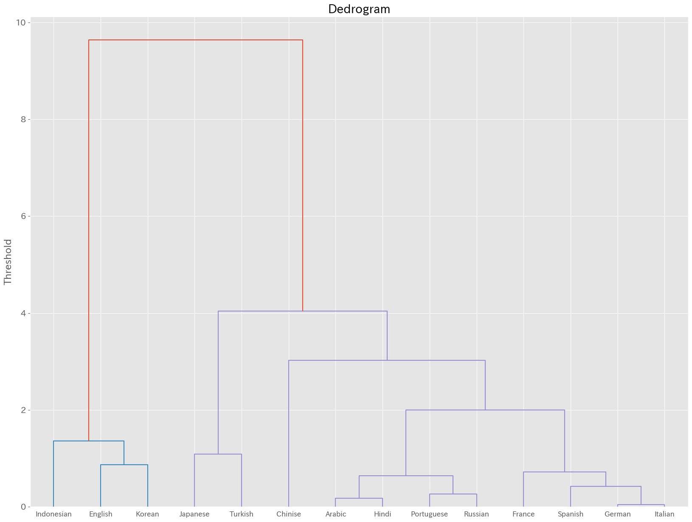
階層クラスタリングで得られた結果を散布図上に色で表現してみます.
clusters = fcluster(res, t=5, criterion='maxclust')
colors = ["orange", "pink", "blue", "brown", "red", "grey", "yellow", "green"]
print(clusters)
df['c'] = clusters
print(df)
for i in list(set(clusters)):
x = df[df['c']==i]['x']
y = df[df['c']==i]['y']
plt.scatter( x
, y
, alpha=0.8
, label = i
, c=colors[i])
text = [plt.text(pca[i,0],pca[i,1],l) for i,l in enumerate(labels)]
adjust_text(text, arrowprops=dict(arrowstyle='-', color='gray', lw=0.5))
plt.legend()
plt.grid()
plt.xlabel('x')
plt.ylabel('y')
plt.show()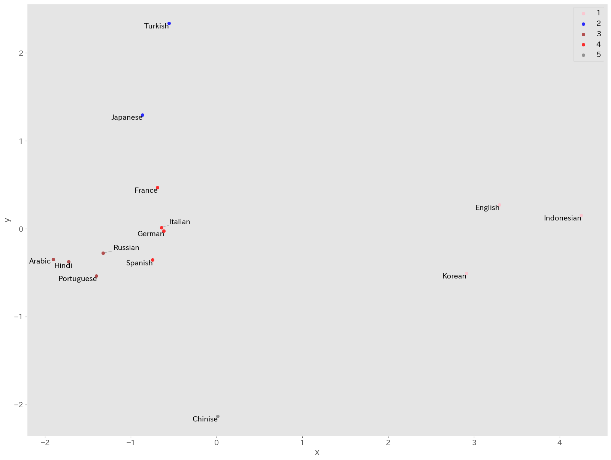
英語, 韓国語, インドネシア語の クラスタ1, 日本語, トルコ語の クラスタ2, アラビア語, ヒンディー語, ポルトガル語, ロシア語の クラスタ3, フランス語, ドイツ語, スペイン語, イタリア語の クラスタ4, 中国語単体の クラスタ5 になりました.
研究で行う場合には, それぞれのクラスタの背景などを考察する必要があります. 例えば, ここでは LGBTQ に関する各言語圏での考え方が Wikipedia の記事に反映されていると想定して, 各国の法制度や世界価値観調査などと比較すると面白いかもしれません.
続いて, それぞれのクラスタごとの特徴をワードクラウドで確認してみましょう.
ワードクラウドの作成に必要なライブラリをインストールします.
uv add mecab-python3 unidic-lite wordcloud gensim各クラスタごとにワードクラウドを作成してみます.
#クラスタごとの中身を見てみる
from wordcloud import WordCloud
import os
import re
import MeCab as mc
from gensim.corpora.dictionary import Dictionary
from gensim.models import LdaModel
df_wiki['c'] = clusters
print(df_wiki['c'])
def strip_CRLF_from_Text(text):
"""テキストファイルの改行，タブを削除し，形態素解析を実行する．
改行前後が日本語文字の場合は改行を削除する．
それ以外はスペースに置換する．
"""
# 改行前後の文字が日本語文字の場合は改行を削除する
plaintext = re.sub('([ぁ-んー]+|[ァ-ンー]+|[\\u4e00-\\u9FFF]+|[ぁ-んァ-ンー\\u4e00-\\u9FFF]+)(\n)([ぁ-んー]+|[ァ-ンー]+|[\\u4e00-\\u9FFF]+|[ぁ-んァ-ンー\\u4e00-\\u9FFF]+)',
r'\1\3',
text)
# 残った改行とタブ記号はスペースに置換する
plaintext = plaintext.replace('\n', ' ').replace('\t', ' ')
return plaintext
def mecab_wakati(text):
"""
MeCabで分かち書き．
ただし品詞は名詞だけに限定．
"""
t = mc.Tagger()
# t = mc.Tagger('-d /usr/local/lib/mecab/dic/mecab-ipadic-neologd/')
node = t.parseToNode(text)
sent = ""
while(node):
if node.surface != "": # ヘッダとフッタを除外
word_type = node.feature.split(",")[0]
# 名詞だけをリストに追加する
if word_type in ["名詞"]:
sent += node.surface + " " # node.surface は「表層形」
# 動詞（の基本形），形容詞，副詞もリストに加えたい場合は次の２行を有効にする
#if word_type in [ "動詞", "形容詞","副詞"]:
if word_type in [ "動詞","副詞","形容詞"]:
sent += node.feature.split(",")[10] + " " # node.feature.split(",")[10] は unidic の「書字形基本形」(活用する前の形, 例: 当たり → 当たる)
node = node.next
if node is None:
break
return sent
def ids_to_words(dictionary: Dictionary, ids):
return [dictionary[idx] for idx in ids]
def most_frequent_words_rate(dictionary: Dictionary, threshold: float):
threshold_abs = int(threshold * dictionary.num_docs)
ids = [ v for v in dictionary.token2id.values() if threshold <= dictionary.dfs.get(v, 0) > threshold_abs]
return ids_to_words(dictionary, ids)
#クラスタごとにテキストをまとめてワードクラウドを作ってみる
font_path_gothic = './data/fonts-japanese-gothic.ttf'
stop_words = ['こと','繁体','簡体','日本','ブラジル','ポルトガル']
txts = []
for c in list(df_wiki['c'].unique()):
txt = ""
df_t = df_wiki[df_wiki['c'] == c]
for j in df_t['Text']:
txt += j + "\n"
txt = strip_CRLF_from_Text(txt)
txt = mecab_wakati(txt)
txts.append(txt)
print(txts)
dictionary = Dictionary([x.split(' ') for x in txts])
print(most_frequent_words_rate(dictionary, 0.5))
stop_words += most_frequent_words_rate(dictionary, 0.5)
print(stop_words)
for c,txt in zip(list(df_wiki['c'].unique()),txts):
result = WordCloud( width=1000,height=400,background_color='white'
, font_path=font_path_gothic
, regexp=r"[\w']+" #一文字を表示
, stopwords=stop_words).generate(txt)
plt.figure(figsize=(12,10))
plt.imshow(result)
plt.title(str(c))
plt.axis('off')
plt.show()
クラスタごとに異なる単語が現れています. 研究では, それぞれの特徴とその理由を考察します.
トピックモデル (発展)
続いて, テキスト文書の集合から潜在的なトピック (話題) を抽出するために広く利用される古典的手法である, トピックモデルを利用してみましょう.
トピックモデルでは単語の分布を使って, 文章が何について話しているかを抽出します. ただし, 出力は単語の集合で表されるため, そのトピックが何に関する話題かは利用者が判断する必要があります.
- 例: トピックA: 「経済」「市場」「投資」 ← 経済に関するトピックと解釈できる
- 例: トピックB: 「ねこ」「いぬ」「ペット」 ← ペットに関するトピックと解釈できる
トピックモデルにもいくつかの手法がありますが, 最も一般的な実装手法の一つに LDA (Latent Dirichlet Allocation: 潜在的ディリクレ配分法) があります. LDA 以外にも PLSA (Probabilistic Latent Semantic Analysis) などがあります.
LDA では各文章をトピックの混合分布として表現します.
- 例: 文章1: トピックA 0.5, トピックB 0.4, トピックD 0.1
- 例: 文章2: トピックA 0.6, トピックE 0.3
LDA では, 各文書のトピック分布と各トピックの単語分布にディリクレ分布を使用します. ディリクレ分布は, 確率の分布に対する分布 (事前分布) として使われ, 特にトピックの混合率が異なる多様な文書集合に対応できます. この過程では「ギブスサンプリング」や「変分ベイズ法」といった推論手法を使い, 文書全体のトピックと単語の分布が収束するまで反復的に計算されます. ギブスサンプリング (マルコフ連鎖モンテカルロ法の一種) や事後分布, 事前分布などは, 第11章の統計モデリングで扱います.
X (Twitter) API を用いたデータの取得
自然言語解析では, ワードクラウドの事例のように, まとまった文章を分析する場合もありますが, X (旧:Twitter) のつぶやきのように, 短い文章の集合を扱う場合もあります. ここでは, Twitter の API を利用して取得したつぶやきを分析してみましょう.
API という仕組みの説明と, X API による取得手順 (認証トークンの発行, 環境変数での受け渡し, 取得コード) は, 特別講義 (データサイエンス) の資料 補足B X (Twitter) API によるデータの取得にまとめてあります (API 一般の説明は同じ資料の補足A). X API は 2026 年 2 月の改定で無料の取得枠が廃止され, 投稿 1 件 0.005 ドルの従量課金だけになりました. 研究で利用する人以外は, 取得済みの 50 件の投稿をまとめたデータをダウンロードして利用しましょう. このデータは補足B で取得する posts.csv と同じ列構造 (query = 検索ワード, text = 投稿本文) なので, 以下のコードは自分で取得した posts.csv でもファイル名の変更だけで動きます.
トピックモデル実践
LDA によるトピックモデルを利用するためにライブラリ gensim と, LDA の可視化用のライブラリ pyLDAvis をインストールしましょう.
uv add gensim pyLDAvisimport と形態素解析のための関数を定義しておきます.
URL は上手く形態素解析できないので, URL を削除する関数も新たに定義しています.
import pandas as pd
import MeCab as mc
import re
from gensim.corpora.dictionary import Dictionary
from gensim.models import LdaModel
import pyLDAvis
import pyLDAvis.gensim_models as gensimvis
import pyLDAvis.gensim
def strip_CRLF_from_Text(text):
"""テキストファイルの改行,タブを削除し,形態素解析を実行
改行前後が日本語文字の場合は改行を削除する．
それ以外はスペースに置換する．
"""
# 改行前後の文字が日本語文字の場合は改行を削除する
plaintext = re.sub('([ぁ-んー]+|[ァ-ンー]+|[\\u4e00-\\u9FFF]+|[ぁ-んァ-ンー\\u4e00-\\u9FFF]+)(\n)([ぁ-んー]+|[ァ-ンー]+|[\\u4e00-\\u9FFF]+|[ぁ-んァ-ンー\\u4e00-\\u9FFF]+)',
r'\1\3',
text)
# 残った改行とタブ記号はスペースに置換する
plaintext = plaintext.replace('\n', ' ').replace('\t', ' ')
return plaintext
def mecab_wakati(text,word_types = ["名詞","動詞","形容詞","副詞"]):
#分かち書き
t = mc.Tagger()
#word_types = [String]で指定 ("名詞","動詞","形容詞","副詞")
node = t.parseToNode(text)
sent = ""
noun = [x for x in word_types if x == "名詞"]
others = [x for x in word_types if x in [ "動詞", "形容詞","副詞"]]
while(node):
if node.surface != "": # ヘッダとフッタを除外
word_type = node.feature.split(",")[0]
if word_type in noun:
sent += node.surface + " " # node.surface は「表層形」
if word_type in others:
sent += node.feature.split(",")[10] + " " # node.feature.split(",")[10] は unidic の「書字形基本形」(活用する前の形, 例: 当たり → 当たる)
node = node.next
if node is None:
break
return sent
def remove_urls(text):
# URLを検出する正規表現パターン
url_pattern = r'http[s]?://(?:[a-zA-Z]|[0-9]|[$-_@.&+]|[!*\\(\\),]|(?:%[0-9a-fA-F][0-9a-fA-F]))+'
# URLを空文字に置換して除外
return re.sub(url_pattern, '', text)データを読み込みます (このデータを取得した次の日に国民民主党の党首の不倫騒動があったので, そのつぶやきが取れていれば面白かったのですが, 残念です).
トークナイズ (形態素解析), 削除する語の指定, 削除までをまとめて行います. ここで指定している削除する語は, 一度結果を見たあとで追加したものです. 実際の分析では, 結果とコードを何往復かして, 調整する作業が必要になります.
形態素解析の前に remove_urls() を適用していることに注意してください.
#データの読み込み (X API で取得した posts.csv と同じ列構造: query, text)
df = pd.read_csv('data/tweets.csv')
#投稿本文の列を取り出す
akagi = df['text']
#トークナイズ
txt = [mecab_wakati(strip_CRLF_from_Text(remove_urls(x)),["名詞","動詞"]).split(' ') for x in akagi]
#削除文字の指定
stopwords = ['思う','言う','いう','いる','ある','こと']
txt = [[x for x in t if x not in stopwords] for t in txt]ワードクラウドで扱った「千葉商科大学の理念」は単一のテキストデータでしたが, 今回の分析の対象は 50 件のつぶやきです. このような複数のテキストを扱う際には, 前処理として出現頻度による単語の削除がよく用いられます. ほとんどすべてのテキストに出てくるような単語 (数字や副詞などが多い) は特徴を抽出する際には役に立たないので削除したほうが良い場合があります. 反対に, 出現回数がごく少ない単語, 造語や個人名なども削除したほうがよい場合があります.
実際の分析では, どの程度の頻度を基準とするかを結果を見ながら調整する必要がありますが, 今回は練習なので 2文書未満にしか出現しない単語 と, 全体の50%以上に出現する単語 を削除しています.
実装は dictionary クラスの filter_extremes() メソッドを利用しています.
#辞書の作成
dictionary = Dictionary(txt)
#出現がx文書に満たない単語と、y%以上の文書に出現する単語を極端と見做し削除する
x =2
y =0.5
dictionary.filter_extremes(no_below=x,no_above=y)
## LdaModelが読み込めるBoW形式に変換
corpus = [dictionary.doc2bow(x) for x in txt]
print(f"Number of unique tokens: {len(dictionary)}")
print(f"Number of documents: {len(corpus)}")
"""
Number of unique tokens: 220
Number of documents: 50
"""LDA では, 事前に抽出するトピック数を決めることができます. トピック数も実際には調整が必要ですが, 今回は決め打ちで 3 としています.
LDA の結果は pyLDAvis によって html 形式で出力されます.
#3トピックを抽出
num_topics =3
lda = LdaModel(corpus, id2word =dictionary, num_topics=num_topics, alpha=0.01)
#トピックごとに上位5単語を表示
df =pd.DataFrame()
for t in range(num_topics):
word=[]
for i, prob in lda.get_topic_terms(t, topn=5):
word.append(dictionary.id2token[int(i)])
_ = pd.DataFrame([word],index=[f'topic{t+1}'])
df = df._append(_)
print(df.T)
"""
topic1 topic2 topic3
0 金 万 増税
1 立憲 円 壁
2 案 壁 メディア
3 給付 103 自民
4 経済 話 結果
"""
#可視化
#PyLDAvisの実装
visualisation = pyLDAvis.gensim.prepare(lda, corpus, dictionary)
pyLDAvis.save_html(visualisation, 'result/LDA_Visualization.html')3 つのトピックはいずれも 103 万円の壁の話をしていますが, topic1 では立憲民主党の対案としての低所得者への給付の話題, topic3 ではメディアや自民党に対する批判などの話題が抽出されました. あまりはっきりしていませんが, もう少しつぶやきの数を増やすと分かりやすくなるかもしれません.
出力された LDA_Visualization.html をクリックするとブラウザ上で確認することができます.
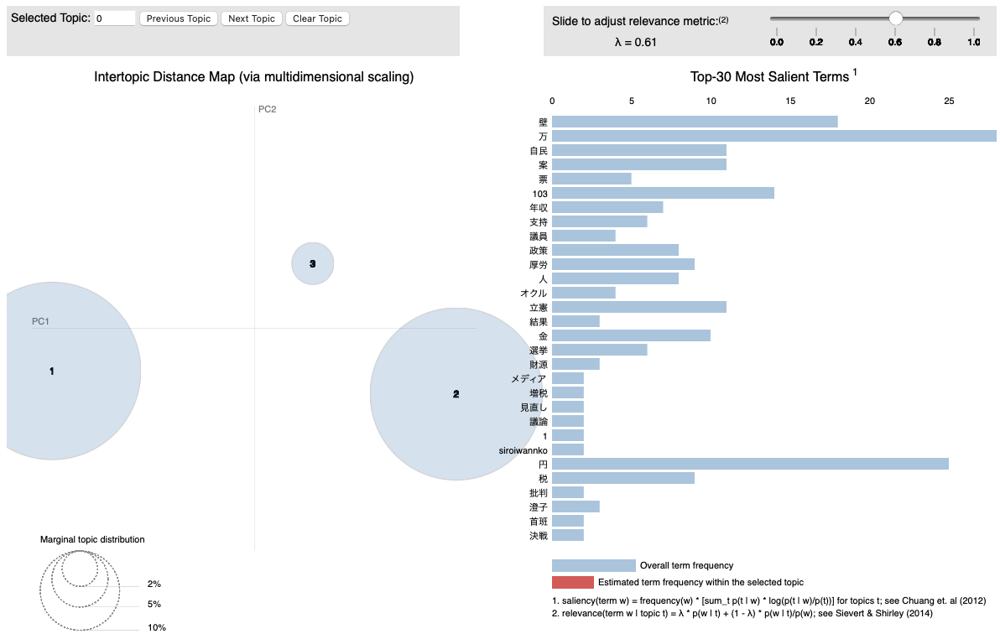
左側には主成分分析による第 1 主成分, 第 2 主成分上にマッピングされたトピックの集合が可視化されており, 右側には全体のトピックにおける単語の分布が表示されています.
それぞれのトピックをクリックすることでトピックごとの単語の分布が表示されます.
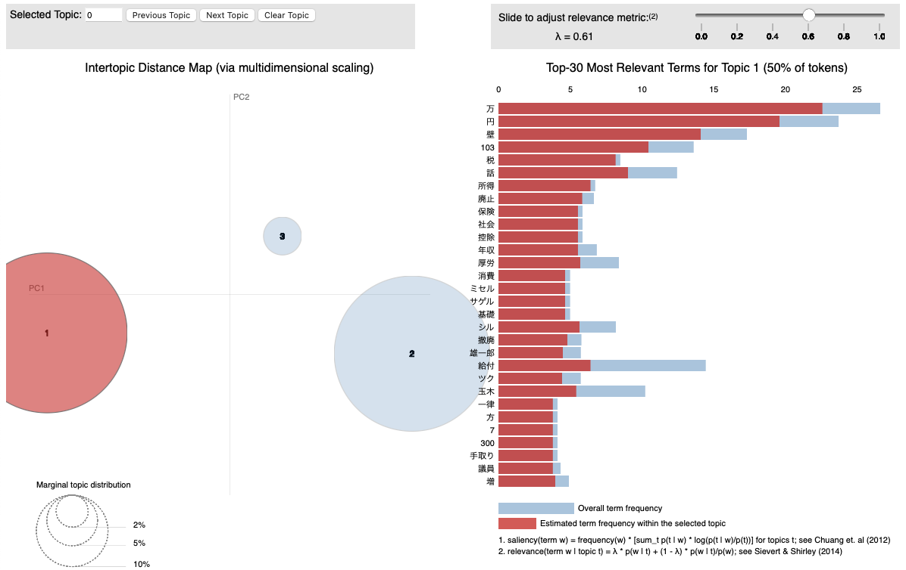
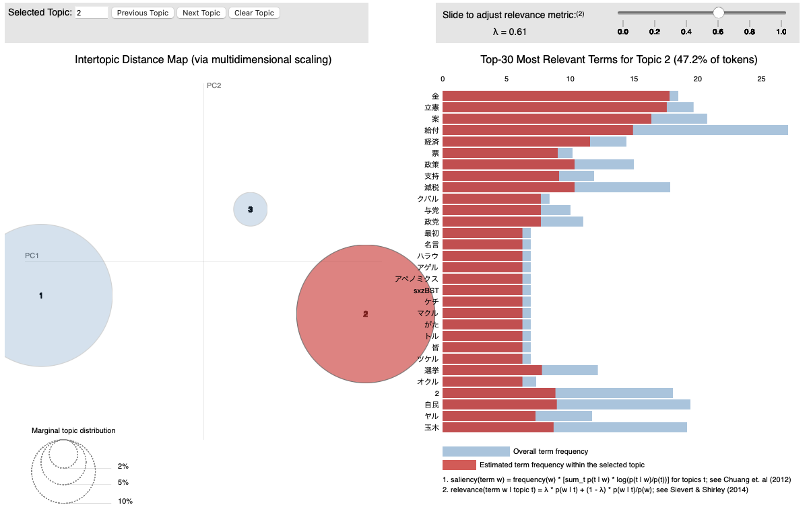
右上のバーで調整できるラムダは, トピックモデルの結果を調整するためのパラメータです. ラムダの値が大きいほど, 他のトピックにも出現する一般的な単語を除外し, トピック内の単語の特徴を強調します. 値を変化させてどのようにトピックの分布が変わるかを確認してみましょう.
コード全体は以下のようになっています.
import pandas as pd
import MeCab as mc
import re
from gensim.corpora.dictionary import Dictionary
from gensim.models import LdaModel
import pyLDAvis
import pyLDAvis.gensim_models as gensimvis
import pyLDAvis.gensim
def strip_CRLF_from_Text(text):
"""テキストファイルの改行,タブを削除し,形態素解析を実行
改行前後が日本語文字の場合は改行を削除する．
それ以外はスペースに置換する．
"""
# 改行前後の文字が日本語文字の場合は改行を削除する
plaintext = re.sub('([ぁ-んー]+|[ァ-ンー]+|[\\u4e00-\\u9FFF]+|[ぁ-んァ-ンー\\u4e00-\\u9FFF]+)(\n)([ぁ-んー]+|[ァ-ンー]+|[\\u4e00-\\u9FFF]+|[ぁ-んァ-ンー\\u4e00-\\u9FFF]+)',
r'\1\3',
text)
# 残った改行とタブ記号はスペースに置換する
plaintext = plaintext.replace('\n', ' ').replace('\t', ' ')
return plaintext
def mecab_wakati(text,word_types = ["名詞","動詞","形容詞","副詞"]):
#分かち書き
t = mc.Tagger()
#word_types = [String]で指定 ("名詞","動詞","形容詞","副詞")
node = t.parseToNode(text)
sent = ""
noun = [x for x in word_types if x == "名詞"]
others = [x for x in word_types if x in [ "動詞", "形容詞","副詞"]]
while(node):
if node.surface != "": # ヘッダとフッタを除外
word_type = node.feature.split(",")[0]
if word_type in noun:
sent += node.surface + " " # node.surface は「表層形」
if word_type in others:
sent += node.feature.split(",")[10] + " " # node.feature.split(",")[10] は unidic の「書字形基本形」(活用する前の形, 例: 当たり → 当たる)
node = node.next
if node is None:
break
return sent
def remove_urls(text):
# URLを検出する正規表現パターン
url_pattern = r'http[s]?://(?:[a-zA-Z]|[0-9]|[$-_@.&+]|[!*\\(\\),]|(?:%[0-9a-fA-F][0-9a-fA-F]))+'
# URLを空文字に置換して除外
return re.sub(url_pattern, '', text)
#------------------------------------------------------------------
## ↑ ここまで,関数定義
## ↓ ここから,データ処理
#------------------------------------------------------------------
#データの読み込み (X API で取得した posts.csv と同じ列構造: query, text)
df = pd.read_csv('data/tweets.csv')
#検索ワードが「国民民主党」の投稿本文を取り出す (複数ワードを取得したデータでも動く形)
akagi = df[df['query'] == '国民民主党']['text']
#トークナイズ
txt = [mecab_wakati(strip_CRLF_from_Text(remove_urls(x)),["名詞","動詞"]).split(' ') for x in akagi]
#削除文字の指定
stopwords = ['思う','言う','いう','いる','ある','こと']
txt = [[x for x in t if x not in stopwords] for t in txt]
#辞書の作成
dictionary = Dictionary(txt)
#出現がx文書に満たない単語と、y%以上の文書に出現する単語を極端と見做し削除する
x =2
y =0.5
dictionary.filter_extremes(no_below=x,no_above=y)
## LdaModelが読み込めるBoW形式に変換
corpus = [dictionary.doc2bow(x) for x in txt]
print(f"Number of unique tokens: {len(dictionary)}")
print(f"Number of documents: {len(corpus)}")
#3トピックを抽出
num_topics =3
lda = LdaModel(corpus, id2word =dictionary, num_topics=num_topics, alpha=0.01)
#トピックごとに上位5単語を表示
df =pd.DataFrame()
for t in range(num_topics):
word=[]
for i, prob in lda.get_topic_terms(t, topn=5):
word.append(dictionary.id2token[int(i)])
_ = pd.DataFrame([word],index=[f'topic{t+1}'])
df = df._append(_)
print(df.T)
#可視化
#PyLDAvisの実装
visualisation = pyLDAvis.gensim.prepare(lda, corpus, dictionary)
pyLDAvis.save_html(visualisation, 'result/LDA_Visualization.html')n-gram と文章間類似度 (発展)
n-gram は, 文章の中で隣り合う n 個の単語 (または文字) の並びです. 「学生 が 先生 に 本 を 借り た」の単語の 2-gram は「学生 が」「が 先生」「先生 に」「に 本」「本 を」「を 借り」「借り た」の 7 つです. 1-gram は単語 1 つずつ, つまり単語そのものです.
文章を「どの n-gram が何回現れたか」を並べたベクトルで表すと, 第4章のコサイン類似度で, 文章同士の似ている度合い (文章間類似度) を計算できます. 単語の出現回数 (1-gram) のベクトルは単語の順番を無視するので, Bag of Words (単語の袋) とも呼ばれます.
次の 4 つの文で比べます. B は A の「学生」と「先生」を入れ替えた文で, 借りた人と貸した人が逆になります. C は A の「本」を「ノート」に変えた文, D は内容の違う文です.
| 文 | |
|---|---|
| A | 学生が先生に本を借りた。 |
| B | 先生が学生に本を借りた。 |
| C | 学生が先生にノートを借りた。 |
| D | 売店で昼休みに弁当が売れた。 |
import MeCab as mc
import pandas as pd
from sklearn.feature_extraction.text import CountVectorizer
from sklearn.metrics.pairwise import cosine_similarity
docs = ['学生が先生に本を借りた。',
'先生が学生に本を借りた。',
'学生が先生にノートを借りた。',
'売店で昼休みに弁当が売れた。']
names = ['A', 'B', 'C', 'D']
# 単語に分割する (句点は除く)
t = mc.Tagger('-Owakati')
words = [t.parse(d).replace('。', '').split() for d in docs]
print(words[0])
# 1. 単語の出現回数のベクトル
vec1 = CountVectorizer(analyzer=lambda w: w)
X1 = vec1.fit_transform(words)
print(pd.DataFrame(X1.toarray(), index=names, columns=vec1.get_feature_names_out()))
# 2. 単語の 2-gram (隣り合う 2 単語の組) の出現回数のベクトル
vec2 = CountVectorizer(analyzer=lambda w: [f'{a}_{b}' for a, b in zip(w, w[1:])])
X2 = vec2.fit_transform(words)
print(vec2.get_feature_names_out()[:5])
for X, label in [(X1, '単語の出現回数'), (X2, '単語の2-gram')]:
print(label)
print(pd.DataFrame(cosine_similarity(X), index=names, columns=names).round(3))
"""
['学生', 'が', '先生', 'に', '本', 'を', '借り', 'た']
が た で に を ノート 借り 先生 売れ 売店 学生 弁当 昼休み 本
A 1 1 0 1 1 0 1 1 0 0 1 0 0 1
B 1 1 0 1 1 0 1 1 0 0 1 0 0 1
C 1 1 0 1 1 1 1 1 0 0 1 0 0 0
D 1 1 1 1 0 0 0 0 1 1 0 1 1 0
['が_先生' 'が_売れ' 'が_学生' 'で_昼休み' 'に_ノート']
単語の出現回数
A B C D
A 1.000 1.000 0.875 0.375
B 1.000 1.000 0.875 0.375
C 0.875 0.875 1.000 0.375
D 0.375 0.375 0.375 1.000
単語の2-gram
A B C D
A 1.000 0.571 0.714 0.0
B 0.571 1.000 0.286 0.0
C 0.714 0.286 1.000 0.0
D 0.000 0.000 0.000 1.0
"""CountVectorizer は, 文章の一覧から現れる語の一覧 (列) を作り, 各文章を語ごとの出現回数のベクトルに変換します. analyzer には, 1 つの文章を数える単位のリストにする関数を渡します. 単語の出現回数では単語のリストをそのまま使い, 2-gram では隣り合う 2 単語を _ でつないだ文字列を 1 つの単位として数えています. cosine_similarity は, すべての文章の組についてコサイン類似度を計算します.
A と C の単語の出現回数のベクトルでは, 8 つの単語のうち「本」と「ノート」以外の 7 つが共通で, どの単語も 1 回ずつ現れます. 内積は 7, 各ベクトルの長さは \sqrt{8} なので, コサイン類似度は 7 / (\sqrt{8} \times \sqrt{8}) = 0.875 です.
- 単語の出現回数では, A と B の類似度が 1.000 になります. 同じ単語が同じ回数だけ現れるので, 借りた人が逆になってもベクトルは同じです.
- 2-gram では, A と B の類似度は 0.571, A と C は 0.714 です. 単語の出現回数とは逆に, 1 語だけ違う C のほうが, 語順の違う B より A に近くなります. 「学生 が」「が 先生」のような 2-gram は, どの語が「が」の前にあるか, つまり誰が主語かの情報を一部含むからです.
- D は A, B, C と共通の単語 (が, に, た) があるので単語の出現回数では 0.375 ですが, 共通の 2-gram はないので 2-gram では 0 です.
n を大きくするほど語順の情報を多く含みますが, 同じ n-gram が別の文章に現れにくくなり, 多くの組の類似度が 0 に近づきます. また, n-gram はどれも単語の表記で数えるので, 「本」と「書籍」のように意味の近い別の語は別の列になります. 意味の近さを反映した類似度が要るときは, 自然言語ベクトル抽出によるデータ可視化と類似度評価のように, BERT が作るベクトルでコサイン類似度を計算します.
CLIP (発展)
CLIP (Contrastive Language-Image Pre-training) は, 画像と文章を同じベクトルの空間に置くように学習するモデルです (2021 年, OpenAI). 画像を読み取る画像エンコーダ (第9章の Vision Transformer など) と, 文章を読み取る文章エンコーダ (Transformer) を組にして, 画像と文章をそれぞれ同じ次元のベクトルに変換します.
学習には, Web 上から集めた画像とその説明文の組を約 4 億組使いました. 次の図は, 3 組の画像と説明文で学習する様子です.
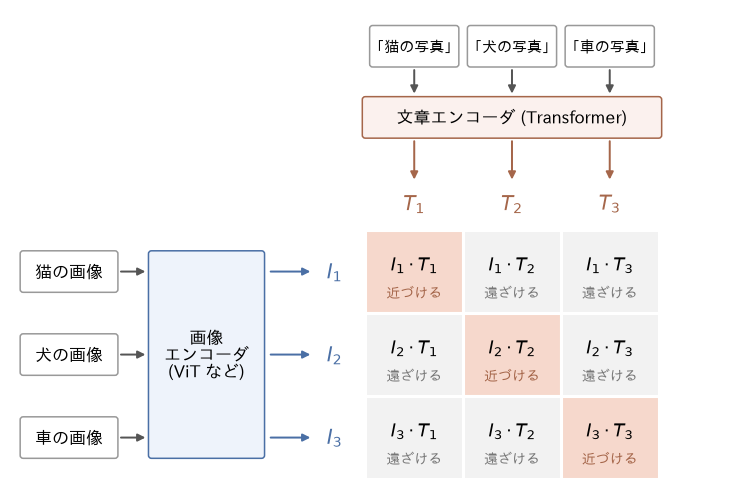
- 3 枚の画像を画像エンコーダでベクトル I_1, I_2, I_3 に, 3 つの説明文を文章エンコーダでベクトル T_1, T_2, T_3 に変換します. どのベクトルも長さを 1 にそろえるので, 内積 I_i \cdot T_j は第4章のコサイン類似度に一致します.
- すべての画像と説明文の組について内積を計算し, 3 × 3 の表にします.
- 表の対角線上の組 (猫の画像と「猫の写真」のように, もともと対応する組) の類似度が大きく, それ以外の 6 つの組の類似度が小さくなるように, 2 つのエンコーダの重みを学習します.
対応する組を近づけるだけでなく, 対応しない組を遠ざけることで, 「猫の画像は『犬の写真』より『猫の写真』に近い」という比較を学習します. このように, 正しい組と誤った組を対比させて学習する方法を対照学習 (contrastive learning) といいます. 実際の学習では, 1 回に 3 組ではなく数万組をまとめて表を作ります. 画像ごとに人がクラスのラベルを付ける必要がなく, Web 上にもともとある説明文を使える点は, 第8章の自己教師あり学習と同じです.
学習した CLIP は, 追加の学習なしで画像を分類できます. 「猫の写真」「犬の写真」「車の写真」のように, 分類したいクラスの名前を文章にして文章エンコーダでベクトルに変換し, 分類したい画像のベクトルと最もコサイン類似度の大きい文章のクラスを答えとします (ゼロショット分類). 第9章の画像分類ではクラスごとに正解付きの画像を集めて学習しましたが, CLIP ではクラスの名前を文章で書くだけで分類の対象を変えられます. 同じ仕組みで, 文章から内容の近い画像を探す検索もできます. 文章から画像を作る生成 AI でも, 文章の意味を画像に結び付けるために CLIP の文章エンコーダが使われてきました.
演習
Exercise DSP10-1
係り受けによる「誰が, どこで, 誰に, 何をしたか」の取り出し
対応する節: 係り受けから「誰が何をしたか」を取り出す
係り受けから「誰が何をしたか」を取り出すのコードを拡張し, 述語 (ROOT の語) に obl で係る語のうち, 格助詞「で」が付くものを「どこで」, 格助詞「に」が付くものを「誰に」として取り出してください. 次の 4 文に適用し, 取り出した結果のうち正しくないものを挙げて, そうなった理由を説明してください.
- 田中さんが図書館で統計の本を借りた。
- 先生は教室で学生にレポートの締め切りを伝えた。
- 佐藤さんが駅で友人に会った。
- 昼休みに売店で弁当を買った。
提出ファイル名: dsp10-1.py
回答例
import spacy
import ginza
nlp = spacy.load('ja_ginza')
def phrase(token):
return ''.join(t.text for t in token.subtree
if not (t.dep_ == 'case' and t.head == token))
def predicate(token):
return ''.join(t.text for t in ginza.bunsetu_span(token) if t.pos_ != 'PUNCT')
def case_of(token):
# token に付いている格助詞 (で, に など)
return ''.join(c.text for c in token.children if c.dep_ == 'case')
text = ('田中さんが図書館で統計の本を借りた。'
'先生は教室で学生にレポートの締め切りを伝えた。'
'佐藤さんが駅で友人に会った。'
'昼休みに売店で弁当を買った。')
for sent in nlp(text).sents:
root = sent.root
row = {'誰が': [], '何を': [], 'どこで': [], '誰に': []}
for c in root.children:
if c.dep_ == 'nsubj':
row['誰が'].append(phrase(c))
elif c.dep_ == 'obj':
row['何を'].append(phrase(c))
elif c.dep_ == 'obl' and case_of(c) == 'で':
row['どこで'].append(phrase(c))
elif c.dep_ == 'obl' and case_of(c) == 'に':
row['誰に'].append(phrase(c))
print(row, predicate(root))
"""
{'誰が': ['田中さん'], '何を': ['統計の本'], 'どこで': ['図書館'], '誰に': []} 借りた
{'誰が': ['先生'], '何を': ['レポートの締め切り'], 'どこで': ['教室'], '誰に': ['学生']} 伝えた
{'誰が': ['佐藤さん'], '何を': [], 'どこで': ['駅'], '誰に': ['友人']} 会った
{'誰が': [], '何を': ['弁当'], 'どこで': ['売店'], '誰に': ['昼休み']} 買った
"""1 文目から 3 文目は正しく取り出せています. 4 文目には誤りが 2 つあります.
- 「誰が」が空です. 日本語では, 文脈から分かる主語を省略することが多く, この文にはもともと主語の語がありません. 係り受け解析は文の中にある語同士の関係を求めるだけなので, 省略された主語は補えません. 補うには, 前の文の主語を引き継ぐなど, 文をまたいだ処理が必要です.
- 「昼休み」が「誰に」に入っています. 格助詞「に」は, 相手 (友人に) だけでなく時 (昼休みに) も表します. 係り受けのラベルはどちらも
oblで, 格助詞も同じなので, ラベルと助詞だけでは区別できません. 区別するには, 係る語が人を表すか時を表すか, という語の意味の情報を使う必要があります.
Exercise DSP10-2
学部名のユーザ辞書と登録のコスト
対応する節: ユーザ定義辞書
「サービス創造学部の学生が商経学部の授業に出た。」を MeCab (unidic-lite) で分かち書きします.
- ユーザ辞書を使わないときの分かち書きの結果を示してください.
- 「サービス創造学部」と「商経学部」を, ユーザ定義辞書の
user_entry関数でコスト 3000 として登録し, 1 語として解析されることを確かめてください. - コストを 10000, 15000, 20000 に変えて辞書を作り直し, それぞれの結果を比べてください. コスト 20000 で分割される語と分割されない語があれば, その違いが生じる理由を, 登録しないときに分割された単語のコストの合計 (
node.wcostの合計) を使って説明してください.
提出ファイル名: dsp10-2.py
回答例
import csv
from pathlib import Path
import unidic_lite
from fugashi import build_dictionary
import MeCab as mc
def user_entry(surface, reading, cost=3000):
feature = ['名詞', '固有名詞', '一般', '*', '*', '*',
reading, surface, surface, reading, surface, reading, '固',
'*', '*', '*', '*', reading, reading, reading, reading,
'*', '*', '*', '*', '*']
return [surface, 4786, 4786, cost] + feature
words = [('サービス創造学部', 'サービスソウゾウガクブ'),
('商経学部', 'ショウケイガクブ')]
text = 'サービス創造学部の学生が商経学部の授業に出た。'
dicdir = Path(unidic_lite.DICDIR).as_posix()
# 問1
print('登録前:', mc.Tagger('-Owakati').parse(text).strip())
# 問2, 問3
for cost in [3000, 10000, 15000, 20000]:
with open(f'data/ex2_{cost}.csv', 'w', encoding='utf-8', newline='') as f:
csv.writer(f).writerows(user_entry(s, r, cost) for s, r in words)
build_dictionary(f'mecab-dict-index -d "{dicdir}" -u data/ex2_{cost}.dic '
f'-f utf-8 -t utf-8 data/ex2_{cost}.csv')
t = mc.Tagger(f'-Owakati -u data/ex2_{cost}.dic')
print(cost, t.parse(text).strip())
# 問3: 登録しないときに分割された単語のコスト
t = mc.Tagger()
for s, r in words:
node = t.parseToNode(s)
costs = []
while node:
if node.surface != '':
costs.append((node.surface, node.wcost))
node = node.next
print(s, costs, sum(c for _, c in costs))
"""
(辞書の作成時の表示は省略)
登録前: サービス 創造 学 部 の 学生 が 商 経学 部 の 授業 に 出 た 。
3000 サービス創造学部 の 学生 が 商経学部 の 授業 に 出 た 。
10000 サービス創造学部 の 学生 が 商経学部 の 授業 に 出 た 。
15000 サービス創造学部 の 学生 が 商経学部 の 授業 に 出 た 。
20000 サービス 創造 学 部 の 学生 が 商経学部 の 授業 に 出 た 。
サービス創造学部 [('サービス', 993), ('創造', 6183), ('学', 6964), ('部', 6416)] 20556
商経学部 [('商', 6389), ('経学', 8049), ('部', 6416)] 20854
"""- 「サービス 創造 学 部」「商 経学 部」のように, どちらの学部名も辞書にある短い語に分割されます. 「商経学部」は「商経」ではなく「商」「経学」「部」に分かれています.
- コスト 3000 では, 2 つの学部名がそれぞれ 1 語になります.
- コスト 15000 までは 2 語とも 1 語のままですが, 20000 では「サービス創造学部」だけが分割されます. 形態素解析器は, 登録した語 1 つで表す区切り方と, 短い語に分ける区切り方のうち, コストの合計が小さいほうを選びます. 分割したときの単語のコストの合計は「サービス創造学部」が 20556, 「商経学部」が 20854 です. 「商経学部」のほうが分割したときのコストが大きい (「経学」のような出にくい語を含む) ので, 登録した語のコストが大きくても, 分割せずに 1 語とする区切り方が選ばれやすくなります. ただし, どちらの合計も 20000 をわずかに上回るだけなので, 単語同士のつながりのコスト (文脈 ID の組で決まる値) も結果を左右します. 登録した語を確実に 1 語にするには, 分割したときのコストの合計より十分小さいコストを付けます.